알간지쇼츠 2위지금 내가 어떤 사람인지 아는 법(영화 딜레마)
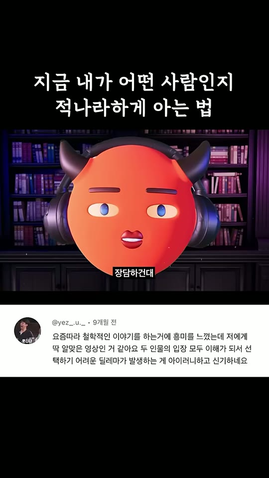
지금 내가 어떤 사람인지 적나라하게 아는 법
조회수 1,369,940좋아요 43,860댓글 273업로드 2024-07-25길이 60.05초608x1080 · 30fps · 9:16 (16:9 밴드 608x364 @y293) · -10.8 LUFS (LRA 3.1)
3D 악마 아바타가 '이 영화를 보면 지금의 내가 어떤 사람인지 안다'고 장담한 뒤, 사랑하는 사람의 비밀(문맹)과 살인 재판이라는 딜레마를 2인칭으로 들이밀다가 결정적 증거 직전에 끊고 롱폼 링크로 보내는 티저 쇼츠. 채널 쇼츠 중앙값의 1.96배.
🔥 떡상 이유
- 자기관련성 훅(self-reference effect): '지금 내가 어떤 사람인지 적나라하게' — 누구나 자기 얘기로 받아들여 클릭·시청 유지
- 권위적 단언('제가 감히 장담하건대') + 약속 → 영화 제목을 끝까지 숨겨 오픈 루프 유지
- 3단 감정 밈 연타(두려움→사랑→역겨움, 8.3~16.9초): 같은 영화에 정반대 감정 → '왜?' 궁금증 최고조, 2~3초 간격 시각 전환
- 2인칭 딜레마 질문('진실을 말하고 구할 건가요? 그냥 두실 건가요?') + 질문 끝마다 점프줌 누적 → 머릿속 답변 강요, 댓글 토론
- 대입 장치: 'A' 실루엣 + '가족·친구·연인 중 골라잡아' → 시청자가 자기 사람을 넣어 감정 이입
- 댓글 카드 8개가 모두 롱폼 본편의 깊은 감상('끝에 알간지님이 말하는…') → '본편이 더 있다'는 사회적 증거 = 링크 클릭 유도
- 모순 직전 절단: '문맹인데 범인은 글을 읽고…' → 결론 궁금증으로 링크/재시청
hook0~8.3초: '제가 감히 장담하건대 이 영화를 보면 지금의 내가 어떤 사람인지 아주 적나라하게 알 수 있습니다' + 자기관련성 제목 고정
conflict같은 영화에 두려움/사랑/역겨움 → 딜레마 질문(진실 vs 방관) → 사랑하는 A가 살인 피고인 + 나만 아는 비밀(문맹)
payoff경찰 증거 '범인은 글을 읽고 쓸 수 있다' = 비밀만 밝히면 A는 무죄일 수 있다는 모순을 암시(명시 안 함)
loop증거 문장 도중 절단 + '하단의 링크' 엔드카드 + 롱폼 감상 댓글 → 본편 이동 또는 재시청
⏱ 편집 리듬
컷 수13평균 컷 길이4.62최단/최장1.78 / 9.13분당 컷12.0해석초반 0~17초는 0.9~3초 간격(점프줌·감정 밈 3연타)으로 빠르고, 34~55초 B롤·설명 카드는 7~9초 롱테이크로 느려짐 → 정보 전달 구간은 자막 교체(1~2초)가 리듬 담당. 질문 구간(28.8~34.2)에선 점프줌이 0.7~1.2초마다 (검출기 원본 샷 25개 → 같은 셋업 병합 후 실제 셋업 13개. 화면 변화(점프줌·카드·팝·자막 교체)까지 세면 약 1초당 1회)
🧭 전체 구성 (챕터)
| 구간 | 이름 | 내용 | 이탈 방지 장치 |
|---|---|---|---|
| 0–8.33s | 단언 훅 | 이 영화 보면 내가 누군지 안다 | 자기관련성+점프줌 |
| 8.33–16.87s | 감정 3연타 | 두려움→사랑→역겨움 | 밈 3연타 |
| 16.87–34.23s | 딜레마 질문 | 진실을 말해 구할까, 둘까 | 2인칭 질문+점프줌 누적 |
| 34.23–54.97s | 상황 설정 | 살인 재판, 사랑하는 A, 나만 아는 문맹 비밀 | A 실루엣 대입 |
| 54.97–60.05s | 증거+절단 | 범인은 글을 읽고… | 클리프행어+링크 CTA |
대본 공식① 1인칭 단언('제가 감히 장담하건대') + 자기관련 약속 → ② 개인 경험 3단 감정 나열(두려움/사랑/역겨움, 같은 문형 반복) → ③ '자, 궁금하시죠?' 확인 → ④ '본론 전에 질문 하나' 참여 유도 → ⑤ 2인칭 가정법 딜레마 + 양자택일 질문 2개 → ⑥ '예를 들어' 구체 상황(법정·A) → ⑦ 대입 지시('가족·친구·연인 중 골라잡아') → ⑧ 비밀 공개('님들 빼고는 아무도 모름') → ⑨ '그런데' 반전 증거 → ⑩ 문장 도중 절단. 2~5어절 청크, 존댓말+'님들' 반말 호칭, 질문문 비율 약 35%, 영화 제목은 끝까지 미공개.
첫 30초 대본 원문제가 감히 장담하건대, 이 영화를 보면 지금의 내가 어떤 사람인지 아주 적나라하게 알 수 있습니다. 참고로 저는 이 영화를 처음 봤을 때 두려움과 위기감을 느꼈고요, 두 번째로 봤을 때는 감동과 사랑을 느꼈고, 마지막으로 봤을 때는 역겨움을 가장 크게 느꼈어요. 자, 궁금하시죠? 영상의 본론으로 들어가기 전에 우선 이 질문에 한번 답해보시죠. 여러분, 만약 어떤 사람이 고의로 스스로를 망치고 있어요. 여러분이 진실을 말하면 그 사람을 구할 수 있습니다. 여러분은 진실을 말하고 그 사람을 구할 건가요? 혹은 그냥 그대로 두실 건가요? 예를 들어 지금 법정에서는 살인에 대한 재판이 진행되고 있습니다. 범인으로 지목된 사람은 A고, 여러분은 A와 사랑하는 사이입니다. 가족, 친구, 연인 중에 잘 이입되는 거로 하나 골라잡아서 생각해 보시죠. 여러분은, 여러분이 사랑하는 A의 비밀을 알고 있습니다. 바로 A가 문맹이라는 사실이죠. 님들 빼고는 아무도 A가 문맹이라는 그 비밀을 모릅니다. 그런데 경찰이 살인 현장에서 수집한 증거에 따르면 범인은 글을 읽고 (쓸 수 있…) [엔드카드: 뒷 내용은 하단의 링크에서 확인하세요!]
🎞 B롤·삽입 유형
| 유형 | 빈도 | 제작법 |
|---|---|---|
| 감정 밈(카툰·실사 리액션) | 초반 17초에 3회 | 16:9 풀밴드+호스트 PIP 좌하단. 클론 시 AI 가상 캐릭터 |
| 영화 장면 B롤(법정) | 분당 1회 | 와이드 7초+중앙 'A' 실루엣 아이콘 오버레이. 클론 시 AI 가상 법정 |
| 인포그래픽 설명 카드 | 분당 1회 | 검정 배경+흰 실루엣+우측 2단 텍스트 팝 |
| 스톡 B롤(폴리스 라인) | 분당 1회 | 교외 거리+노란 테이프, 느린 푸시인 |
| 점프줌 펀치인 | 분당 약 8회 | 하드컷 1.3~1.6배, 질문 끝·단언 단어마다 |
🎨 스타일 바이블
룩검정 9:16 캔버스 '상단 고정 제목 + 중앙 16:9 밴드 + 하단 고정 댓글 카드' 템플릿(1위 영상과 동일 채널 포맷). 밴드 안은 3D 클레이 악마 아바타(보라 서재) + 감정 밈 + 영화/스톡 B롤 + 흑백 인포그래픽조명아바타: 정면 소프트 키+보라 림. 법정 B롤: 따뜻한 로우키 램프. 설명 카드: 순검정 플랫색#000000(캔버스·설명 카드), #FFFFFF(제목·자막·댓글 카드·실루엣), #FE6D48/#EE3B2E(아바타), #03034C(서재 남색), #6B4A2E(법정 목재 브라운, 추정), #F2C230(폴리스 테이프 옐로, 추정), #A8191F(엔드카드 하이라이트·쉐브론, 측정)렌즈아바타 50mm 상당, 점프줌 디지털 크롭 1.3~1.6배. B롤 와이드 24~35mm 상당(추정). 밴드 소스 647x364 스케일 후 좌우 크롭세트고정 레이아웃(측정): 제목 y 164~263 / 밴드 y 293~657(27.1~60.8%) / 댓글 카드 y 689~851(63.8~78.8%, 흰 전폭, 원형 프로필 60px @x32 y28, 핸들 14px 회색 @x118, 본문 16px 검정 최대 4줄 @x118 줄간 28px) / 아래 빈 검정. 댓글 교체(측정): 9.133, 17.133, 22.133, 29.9, 39.033, 46.667, 53.4, 58.4 하드 제거자막 스타일ASS 폰트 크기(맑은 고딕, 원본 픽셀과 렌더 대조로 ±10px 이내 검증): 제목 55 / 자막 25 / 엔드카드 48. 고정 제목: 흰 굵은 고딕 약 42px 2줄 중앙, 줄1 y 164~205(15.2~19.0%), 줄2 y 222~263(20.6~24.4%), 57.8~58.6 페이드아웃(측정). 하단 자막: 흰 볼드 19px+반투명 검정 박스, y 603~631(55.8~58.4%) 중앙, 청크 즉시 교체. 설명 카드 텍스트: 흰 볼드 이탤릭 + 회색 괄호 보조설명. 엔드카드: 흰 36px 3줄(y 381~538), '하단의 링크' #A8191F 박스워터마크워터마크·로고 스팅 없음(1위 영상과 달리 로고 구간 없음)
알간지(호스트 아바타) — 코랄-레드 구형 머리, 보라-검정 뿔, 차콜 헤드폰(보라 림), 코발트 홍채 아몬드 눈, 굵은 일자 눈썹, 코 없음, 빨간 광택 입술. 몸 없음. 여성 내레이터(추정)
캐릭터 시트 프롬프트Character sheet, 16:9, dark violet library background, stylized 3D clay-like faceless devil avatar head: perfectly round matte coral-red head (#FE6D48 lit, #EE3B2E base), two short curved dark purple-black horns, oversized charcoal-black over-ear headphones with a violet rim light, almond eyes with pale peach sclera and cobalt-blue irises, thick straight dark-red eyebrows, no nose, glossy plump red lips (#C45C74 highlight) slightly pouting, no body, no neck, front / 3/4 / profile plus expressions (confident brow raise, teasing side-glance, serious frown, questioning brows, whisper-secret face)
동물 버전 캐릭터Character sheet, 16:9, dark violet library background, stylized 3D clay-like hamster host 'Hamzzi' (head only): round fluffy golden-orange hamster head with cream cheeks and tiny round ears, two tiny curved dark purple devil horns, oversized charcoal-black over-ear headphones with a violet rim light, big glossy black eyes with white catchlights, thin expressive dark brows, tiny pink nose, small pouting mouth, no body, front / 3/4 / profile plus expressions (confident brow raise, teasing side-glance, serious frown, questioning brows, whisper-secret face)
A(대입용 실루엣) — 얼굴 없는 흰 사람 아이콘+'A' 라벨 — 시청자가 자기 사람을 대입하는 빈 그릇
캐릭터 시트 프롬프트Flat white generic person silhouette icon with a bold letter 'A' above, black background, minimal infographic
동물 버전 캐릭터Flat white hamster-shaped silhouette icon (round ears) with a bold letter 'A' above, black background
감정 밈 캐릭터(가상 대체) — 원본은 기존 카툰/드라마 클립(저작권). 대체: 겁먹은 노란 스펀지형 가상 캐릭터, 황홀한 분홍 토끼 가상 캐릭터, 역겨워하는 금발 여성(가상 인물)
캐릭터 시트 프롬프트Fictional 2D cartoon yellow sponge-like creature and pink bunny lineup plus a fictional blonde young woman in a pink top, reference sheet
동물 버전 캐릭터Fictional 2D cartoon trembling hamster, swooning hamster, and a 3D cream hamster grimacing in disgust, reference sheet
🔊 오디오
목소리여성 1인 내레이션(추정), 빠른 구어체(분당 약 330음절), 단언은 또박또박, 질문 끝은 올림, 비밀 공개 구간은 약간 낮추고 속삭이듯BGM무음 구간 전혀 없음(측정) → 상시 BGM 베드. 장르 추정: 서스펜스 앰비언트/미니멀 피아노(80~90BPM), 법정 구간부터 긴장감 상승(추정). 전체 -10.8 LUFS로 1위 영상보다 2.6dB 더 큼효과음0.933/5.567 점프줌 '툭'(추정)
8.333 밈 공포 떨림(추정)
10.333 하트 '뿅'(추정)
15.5 파리 윙윙(추정)
21.7 줌블러 whoosh(추정)
30.9/32.8/33.567 점프줌 '툭'(추정)
34.233 RGB 글리치 지직(추정)
37.83 아이콘 팝(추정)
49.9/51.0 텍스트 팝(추정)
54.967 사건현장 앰비언스(추정)
58.2 엔드카드 '띵'(추정)라우드니스-10.8TTS 팁여성 TTS, 속도 1.1x. '장담하건대'는 한 음절씩 힘주기. 감정 3연타는 같은 억양 패턴 반복(리듬감). '궁금하시죠?'는 장난스럽게 끝 올림. 질문('구할 건가요?' '두실 건가요?') 뒤 150ms 쉼. 비밀 구간('님들 빼고는 아무도')은 볼륨 -2dB·속삭임 톤. 마지막 '범인은 글을 읽고'에서 하드 컷. 햄찌판 피치 +2반음
BGM 생성 프롬프트Subtle suspense ambient bed for a Korean moral-dilemma explainer short, 84 BPM, soft pulsing low piano notes, airy dark pad, faint ticking clock, builds slightly after 34 seconds with a low string drone, no drums, no vocals, sits under narration, 60 seconds
🎬 컷별 완전 분해 (13개)
컷 1 · 훅: 권위+확신('감히 장담') + 고정 제목 '지금 내가 어떤 사람인지 적나라하
0.0s → 1.8s (1.8s)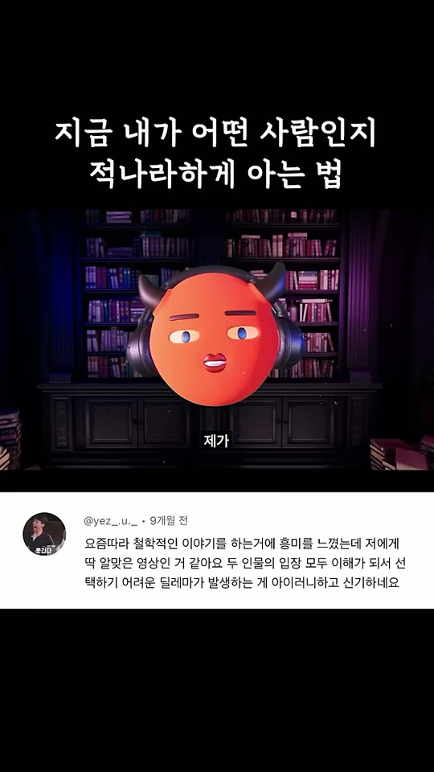
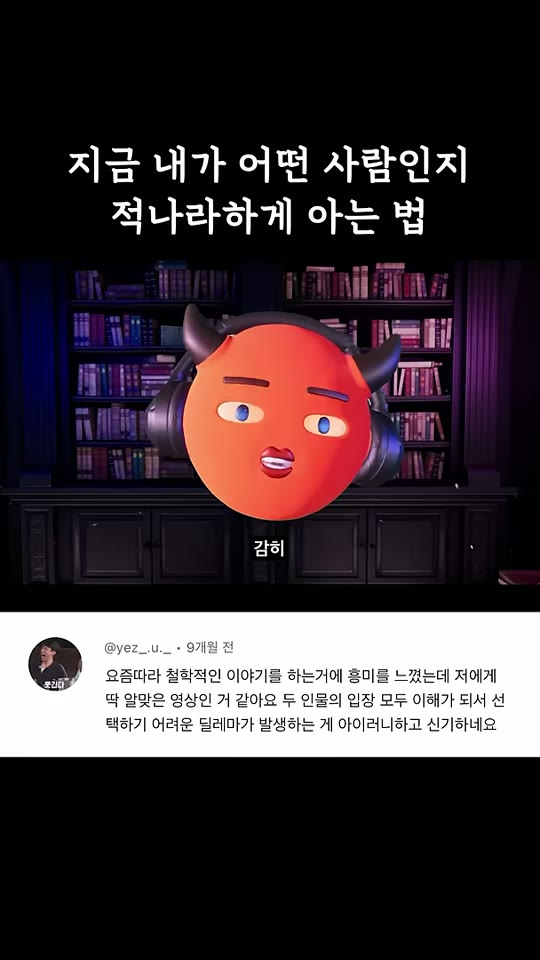
호스트(머리+뿔+헤드폰)
호스트 점프줌 1.3~1.5x
고정 제목 2줄
16:9 밴드
하단 자막
댓글 카드
샷MS → 0.933 점프줌 MCU앵글아이레벨 정면카메라고정. 병합: 검출샷 1(0~0.933 '제가 감히')+2(0.933~1.8 약 1.5배 하드 점프줌 '장담하건대')구도호스트 정중앙, 줌 후 머리가 밴드 세로 85% — 시선 정면으로 '단언'동작호스트가 한쪽 눈썹을 올리고 '장담하건대'에서 확대되며 정면 응시대사알간지(여성 내레이션): 제가 감히 장담하건대화면 자막'제가'(0.00) → '감히'(0.47) → '장담하건대'(0.93)들어오는 전환없음 — 0프레임부터 완성 레이아웃(콜드오픈). 0.933 점프줌효과음/음악대사 즉시 시작 + BGM 베드(추정). 0.933 줌 '툭'(추정)역할훅: 권위+확신('감히 장담') + 고정 제목 '지금 내가 어떤 사람인지 적나라하게 아는 법'의 자기관련성
1순위
minimax-h3한국어 대사 립싱크+오디오 동시 생성, 무료 — 토킹 A롤 기본
2순위
kling-v3-omni레퍼런스 이미지로 아바타 얼굴·헤드폰 일관성 유지하며 립싱크
3순위
veo-3-13D 클레이 질감·보라 림라이트 재현력, 대사 오디오 포함
① 이미지 프롬프트 (원본 클론)16:9 frame, stylized 3D clay-like faceless devil avatar head: perfectly round matte coral-red head (#FE6D48 lit, #EE3B2E base), two short curved dark purple-black horns, oversized charcoal-black over-ear headphones with a violet rim light, almond eyes with pale peach sclera and cobalt-blue irises, thick straight dark-red eyebrows, no nose, glossy plump red lips (#C45C74 highlight) slightly pouting, no body, no neck, head centered filling 60% of frame height, eye-level straight-on, confident raised brow, in front of a dark gothic home-library backdrop: tall dark-wood bookshelves packed with red, purple and navy books, cabinet doors at the bottom, purple velvet curtains at both edges, deep violet-blue moody light, faint haze, clean stylized 3D render, soft frontal key light, violet rim light, 50mm, background slightly soft, 16:9 landscape frame
② 영상 프롬프트 (원본 클론)1.8s, locked-off camera, the avatar talks straight to camera with small lip-sync mouth shapes, at 0.93s a hard 1.5x punch-in (edit) while staring straight into the lens, subtle idle head bob, background static. Korean female voice, fast casual storytelling tone, lip-sync line: "제가 감히 장담하건대"
③ 동물 버전 이미지 프롬프트16:9 frame, stylized 3D clay-like hamster host 'Hamzzi' (head only): round fluffy golden-orange hamster head with cream cheeks and tiny round ears, two tiny curved dark purple devil horns, oversized charcoal-black over-ear headphones with a violet rim light, big glossy black eyes with white catchlights, thin expressive dark brows, tiny pink nose, small pouting mouth, no body, head centered filling 60% of frame height, eye-level straight-on, confident raised brow, in front of a dark gothic home-library backdrop: tall dark-wood bookshelves packed with red, purple and navy books, cabinet doors at the bottom, purple velvet curtains at both edges, deep violet-blue moody light, faint haze, clean stylized 3D render, soft frontal key light, violet rim light, 50mm, background slightly soft, 16:9 landscape frame
④ 동물 버전 영상 프롬프트1.8s, locked-off camera, the hamster host talks straight to camera with small lip-sync mouth shapes, at 0.93s hard 1.5x punch-in, whiskers flare, staring into the lens, subtle idle head bob, background static. Korean female voice, fast casual storytelling tone, lip-sync line: "제가 감히 장담하건대"
네거티브text, subtitles, watermark, logo, body, neck, hands, arms, human skin, nose on the avatar, extra eyes, deformed lips, multiple heads, photoreal human face, vertical 9:16 crop, letterbox bars, blurry, jpeg artifacts
컷 3 · 약속(오픈 루프) — '어떤 영화?' 궁금증을 끝까지 안 풀어줌(영화 제목 미공개)
1.8s → 8.333s (6.533s)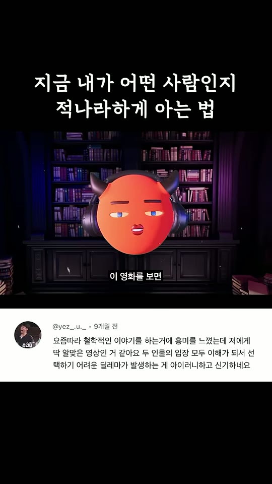
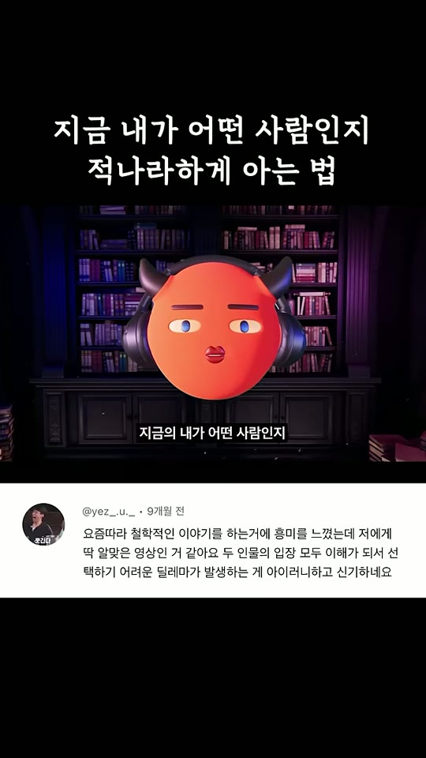
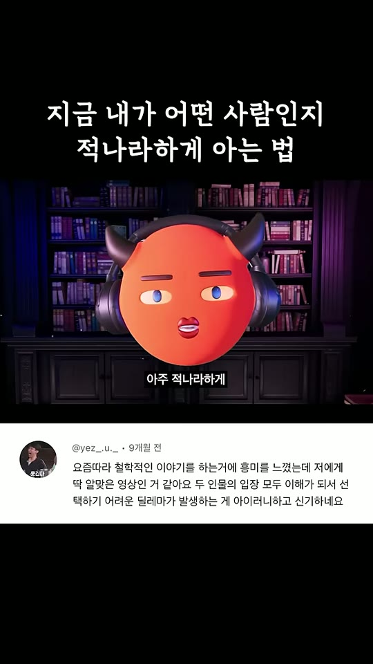
호스트(머리+뿔+헤드폰)
호스트 점프줌 1.3~1.5x
고정 제목 2줄
16:9 밴드
하단 자막
댓글 카드
샷MS → 5.567 점프줌 MCU → MS앵글아이레벨 정면카메라고정. 병합: 검출샷 3(1.8~5.567)+4(5.567~6.467 약 1.4배 점프줌 '알 수 있습니다')+5(6.467~8.333 원래 크기)구도호스트 정중앙, 서가 대칭동작약속을 던지고 '알 수 있습니다'에서 확대, 이어 '참고로 저는'에서 눈을 옆으로 굴리며 경험담 시작대사알간지: 이 영화를 보면 지금의 내가 어떤 사람인지 아주 적나라하게 알 수 있습니다. 참고로 저는 이 영화를 처음 봤을 때화면 자막'이 영화를 보면'(1.80) → '지금의 내가 어떤 사람인지'(2.77) → '아주 적나라하게'(4.60) → '알 수 있습니다'(5.57) → '참고로 저는'(6.47) → '이 영화를 처음 봤을 때'(7.13)들어오는 전환하드컷(점프줌 해제)효과음/음악5.567 줌 '툭'(추정)역할약속(오픈 루프) — '어떤 영화?' 궁금증을 끝까지 안 풀어줌(영화 제목 미공개)
1순위
minimax-h3한국어 대사 립싱크+오디오 동시 생성, 무료 — 토킹 A롤 기본
2순위
kling-v3-omni레퍼런스 이미지로 아바타 얼굴·헤드폰 일관성 유지하며 립싱크
3순위
veo-3-13D 클레이 질감·보라 림라이트 재현력, 대사 오디오 포함
① 이미지 프롬프트 (원본 클론)16:9 frame, stylized 3D clay-like faceless devil avatar head: perfectly round matte coral-red head (#FE6D48 lit, #EE3B2E base), two short curved dark purple-black horns, oversized charcoal-black over-ear headphones with a violet rim light, almond eyes with pale peach sclera and cobalt-blue irises, thick straight dark-red eyebrows, no nose, glossy plump red lips (#C45C74 highlight) slightly pouting, no body, no neck, head centered filling 60% of frame height, eye-level straight-on, knowing half-smile, in front of a dark gothic home-library backdrop: tall dark-wood bookshelves packed with red, purple and navy books, cabinet doors at the bottom, purple velvet curtains at both edges, deep violet-blue moody light, faint haze, clean stylized 3D render, soft frontal key light, violet rim light, 50mm, background slightly soft, 16:9 landscape frame
② 영상 프롬프트 (원본 클론)6.5s, locked-off camera, the avatar talks straight to camera with small lip-sync mouth shapes, promise tone; at 3.77s hard 1.4x punch-in for 0.9s on '알 수 있습니다', then back; eyes drift sideways on '참고로 저는', subtle idle head bob, background static. Korean female voice, fast casual storytelling tone, lip-sync line: "이 영화를 보면 지금의 내가 어떤 사람인지 아주 적나라하게 알 수 있습니다 참고로 저는 이 영화를 처음 봤을 때"
③ 동물 버전 이미지 프롬프트16:9 frame, stylized 3D clay-like hamster host 'Hamzzi' (head only): round fluffy golden-orange hamster head with cream cheeks and tiny round ears, two tiny curved dark purple devil horns, oversized charcoal-black over-ear headphones with a violet rim light, big glossy black eyes with white catchlights, thin expressive dark brows, tiny pink nose, small pouting mouth, no body, head centered filling 60% of frame height, eye-level straight-on, knowing half-smile, in front of a dark gothic home-library backdrop: tall dark-wood bookshelves packed with red, purple and navy books, cabinet doors at the bottom, purple velvet curtains at both edges, deep violet-blue moody light, faint haze, clean stylized 3D render, soft frontal key light, violet rim light, 50mm, background slightly soft, 16:9 landscape frame
④ 동물 버전 영상 프롬프트6.5s, locked-off camera, the hamster host talks straight to camera with small lip-sync mouth shapes, promise tone; at 3.77s hard 1.4x punch-in for 0.9s, then back; ears tilt on '참고로 저는', subtle idle head bob, background static. Korean female voice, fast casual storytelling tone, lip-sync line: "이 영화를 보면 지금의 내가 어떤 사람인지 아주 적나라하게 알 수 있습니다 참고로 저는 이 영화를 처음 봤을 때"
네거티브text, subtitles, watermark, logo, body, neck, hands, arms, human skin, nose on the avatar, extra eyes, deformed lips, multiple heads, photoreal human face, vertical 9:16 crop, letterbox bars, blurry, jpeg artifacts
컷 6 · 감정 1단계 시각화(두려움) — 3단 감정 밈 연타의 시작
8.333s → 10.333s (2.0s)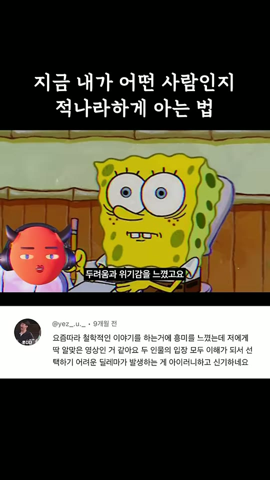
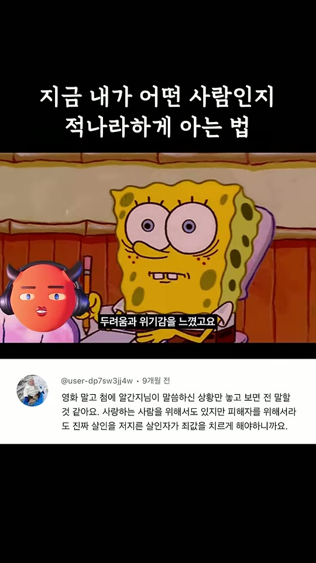
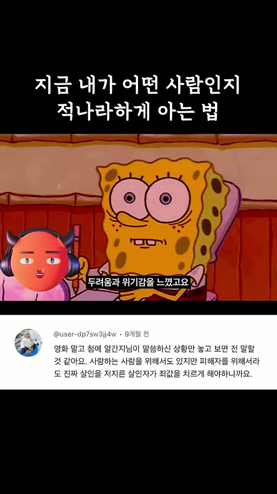
공포 카툰(가상 대체)
호스트 PIP 좌하단
고정 제목 2줄
16:9 밴드
하단 자막
댓글 카드
샷카툰 밈 MS + 호스트 PIP 좌하단앵글아이레벨카메라고정(밈 원본 약한 떨림)구도노란 스펀지형 카툰 캐릭터가 책상 앞에서 겁에 질려 벌벌 떪(중앙~우측), 호스트 PIP 좌하단동작눈이 튀어나올 듯 커진 채 식은땀·떨림, 호스트는 무표정대사알간지: 두려움과 위기감을 느꼈고요화면 자막'두려움과 위기감을 느꼈고요'(8.33)들어오는 전환하드컷(서재 → 밈)효과음/음악밈 원본 떨림 효과음 저음량(추정). 9.133 댓글 ①→②역할감정 1단계 시각화(두려움) — 3단 감정 밈 연타의 시작
1순위
hailuo-2-32D 카툰 과장 동작(허겁지겁 먹기·떨기) 강함
2순위
pixverse-v6셀 애니메이션 룩 짧은 루프 저비용
3순위
grok-imagine-video-1-5코믹 타이밍 변주 후보 대량 생성
① 이미지 프롬프트 (원본 클론)16:9 frame, 2D cartoon (fictional character): a square yellow sponge-like office creature with huge round eyes sitting at a wooden desk, trembling in terror, sweat drops, warm brown interior, thick outlines, flat colors
② 영상 프롬프트 (원본 클론)2.0s, the fictional yellow creature trembles violently, pupils shrink, sweat drops fly; slight camera shake
③ 동물 버전 이미지 프롬프트16:9 frame, 2D cartoon: a tiny fictional cartoon hamster at a wooden desk trembling in terror, huge eyes, sweat drops; bottom-left the 3D Hamzzi host head deadpan
④ 동물 버전 영상 프롬프트2.0s, the cartoon hamster trembles, fur stands up, sweat drops; Hamzzi PIP blinks slowly
네거티브text, subtitles, watermark, logo, body, neck, hands, arms, human skin, nose on the avatar, extra eyes, deformed lips, multiple heads, vertical 9:16 crop, letterbox bars, blurry, jpeg artifacts
컷 7 · 감정 2단계(사랑) — 대비로 궁금증 증폭
10.333s → 13.5s (3.167s)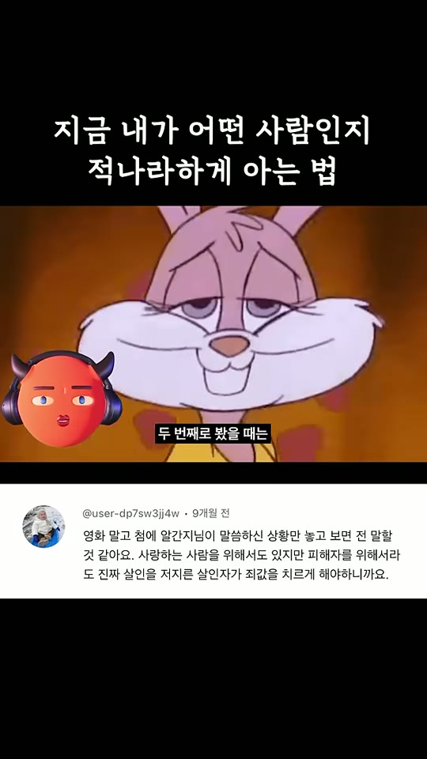
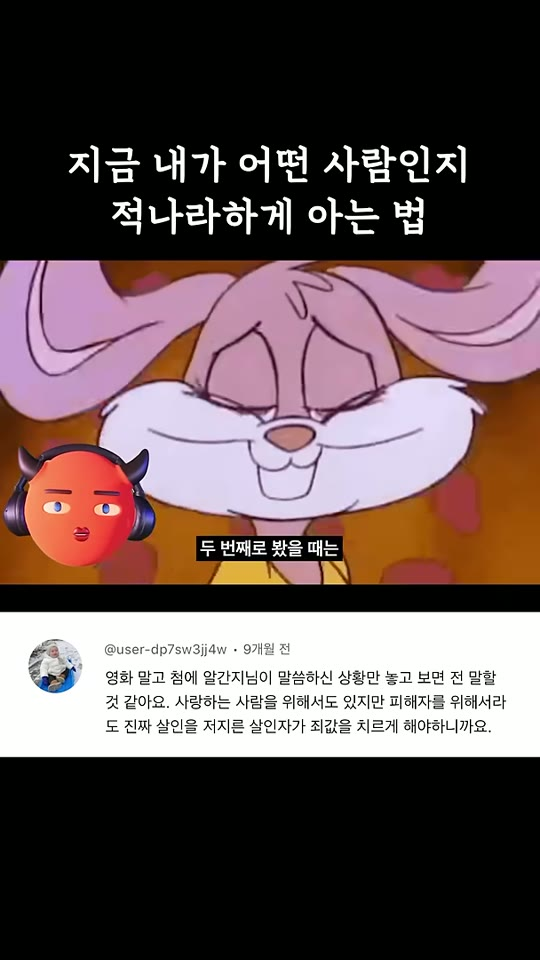
사랑 카툰(가상 대체)
호스트 PIP 좌하단
고정 제목 2줄
16:9 밴드
하단 자막
댓글 카드
샷카툰 밈 CU + 호스트 PIP 좌하단앵글아이레벨카메라병합: 검출샷 7~10 (10.333/10.7/12.3/12.8) = 밈 클립 자체 컷(얼굴 기울기 변화). 10.333~10.7 전환 프레임구도분홍 토끼 카툰이 하트 배경 앞에서 눈을 감고 황홀해함(중앙), 호스트 PIP 좌하단동작토끼가 볼을 붉히며 녹아내리는 표정, 호스트는 곁눈질대사알간지: 두 번째로 봤을 때는 감동과 사랑을 느꼈고화면 자막'두 번째로 봤을 때는'(10.33) → '감동과 사랑을 느꼈고'(11.57)들어오는 전환하드컷효과음/음악하트 '뿅' 또는 로맨틱 스팅(추정)역할감정 2단계(사랑) — 대비로 궁금증 증폭
1순위
hailuo-2-32D 카툰 과장 동작(허겁지겁 먹기·떨기) 강함
2순위
pixverse-v6셀 애니메이션 룩 짧은 루프 저비용
3순위
grok-imagine-video-1-5코믹 타이밍 변주 후보 대량 생성
① 이미지 프롬프트 (원본 클론)16:9 frame, 2D cartoon (fictional character): a pink fluffy cartoon bunny with droopy ears swooning with half-closed dreamy eyes and blushing cheeks, floating red hearts on an orange background, thick outlines
② 영상 프롬프트 (원본 클론)3.2s, the bunny sways dreamily, eyes half-closed, hearts float up; small head tilts at 0.4s, 2.0s, 2.5s (meme's own cuts)
③ 동물 버전 이미지 프롬프트16:9 frame, 2D cartoon: a fluffy cartoon hamster swooning with dreamy half-closed eyes and blushing cheeks, floating hearts on orange background; bottom-left 3D Hamzzi host head side-eyeing
④ 동물 버전 영상 프롬프트3.2s, the cartoon hamster sways dreamily with hearts floating; Hamzzi PIP side-eyes
네거티브text, subtitles, watermark, logo, body, neck, hands, arms, human skin, nose on the avatar, extra eyes, deformed lips, multiple heads, vertical 9:16 crop, letterbox bars, blurry, jpeg artifacts
컷 11 · 감정 3단계(역겨움) = 반전. '같은 영화인데 왜?' 궁금증 최고조
13.5s → 16.867s (3.367s)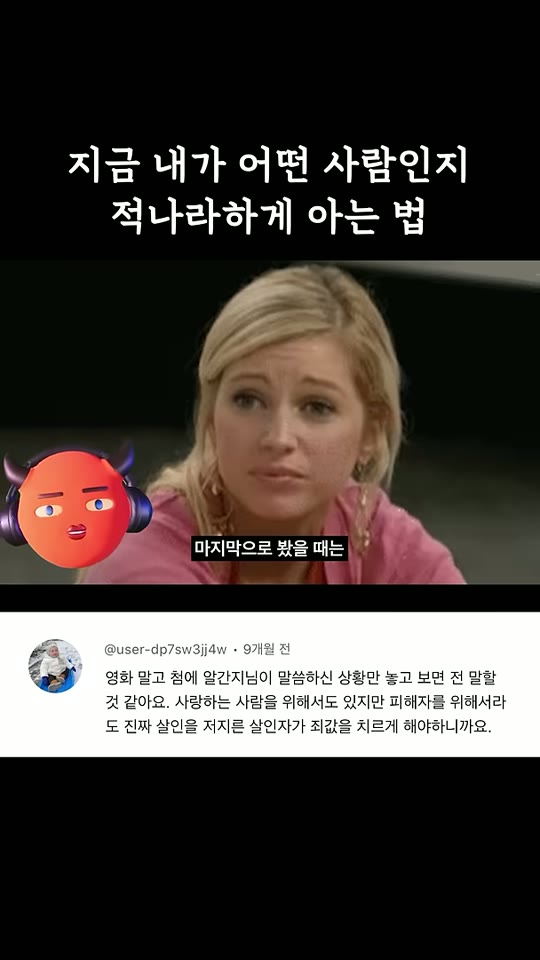
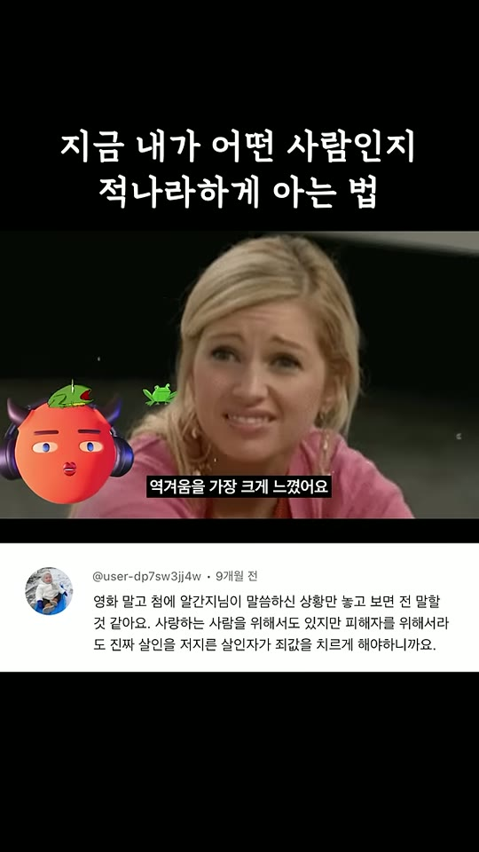
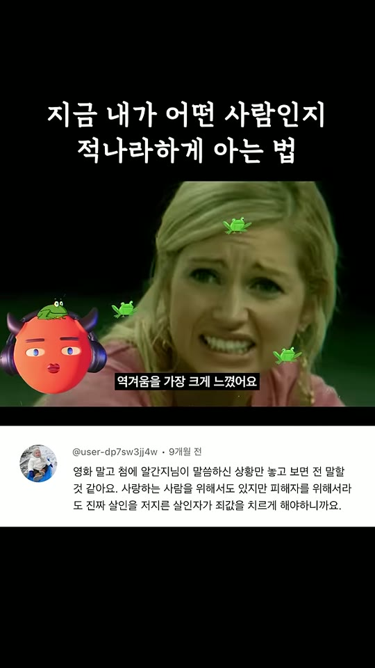
역겨움 리액션 인물(가상)
호스트 PIP 좌하단
고정 제목 2줄
16:9 밴드
하단 자막
댓글 카드
샷실사 밈 MCU(가상 인물) + 호스트 PIP앵글아이레벨카메라고정. 15.5~16.8 초록 파리/벌레 스티커가 인물과 호스트 주위를 날아다니는 오버레이(추정: 모션 스티커)구도금발 젊은 여성(가상)이 중앙에서 점점 역겨운 표정, 어두운 배경, 호스트 PIP 좌하단(초록 벌레가 머리에 붙음)동작여성이 입꼬리를 내리며 인상을 찌푸림 → 초록 벌레 파티클이 튀어나옴대사알간지: 마지막으로 봤을 때는 역겨움을 가장 크게 느꼈어요화면 자막'마지막으로 봤을 때는'(13.50) → '역겨움을 가장 크게 느꼈어요'(14.83)들어오는 전환하드컷효과음/음악벌레 윙윙(추정)역할감정 3단계(역겨움) = 반전. '같은 영화인데 왜?' 궁금증 최고조
1순위
seedance-2-0가상 인물 미세표정(역겨움·환호) 클로즈업 연기
2순위
kling-v3인물 동작+카메라 안정적
3순위
veo-3-1실사 질감·조명 사실감
① 이미지 프롬프트 (원본 클론)16:9 frame, live-action (fictional young woman, not a real actress): blonde woman in a pink top in a dim room, medium close-up, beginning to grimace in disgust, shallow depth of field, natural TV-drama lighting
② 영상 프롬프트 (원본 클론)3.4s, the fictional woman's face slowly twists from neutral to strong disgust (nose wrinkle, lip curl), at 2.0s cartoon green flies buzz around her and the PIP host
③ 동물 버전 이미지 프롬프트16:9 frame, 3D stylized: a fluffy cream-colored hamster in a pink scarf grimacing in disgust in a dim room, medium close-up; bottom-left Hamzzi host head with a cartoon green fly on its horn
④ 동물 버전 영상 프롬프트3.4s, the hamster grimaces harder, whiskers droop, green cartoon flies buzz; Hamzzi PIP swats with a squint
네거티브text, subtitles, watermark, logo, body, neck, hands, arms, human skin, nose on the avatar, extra eyes, deformed lips, multiple heads, photoreal human face, vertical 9:16 crop, letterbox bars, blurry, jpeg artifacts
컷 12 · 궁금증 확인 + 참여형 질문으로 전환(시청자를 '답하는 사람'으로 만듦)
16.867s → 21.8s (4.933s)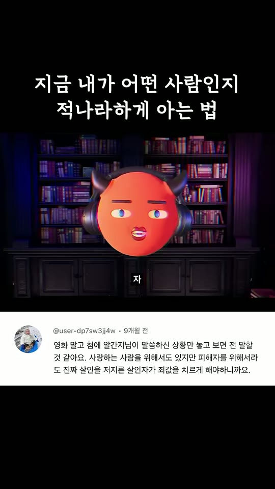
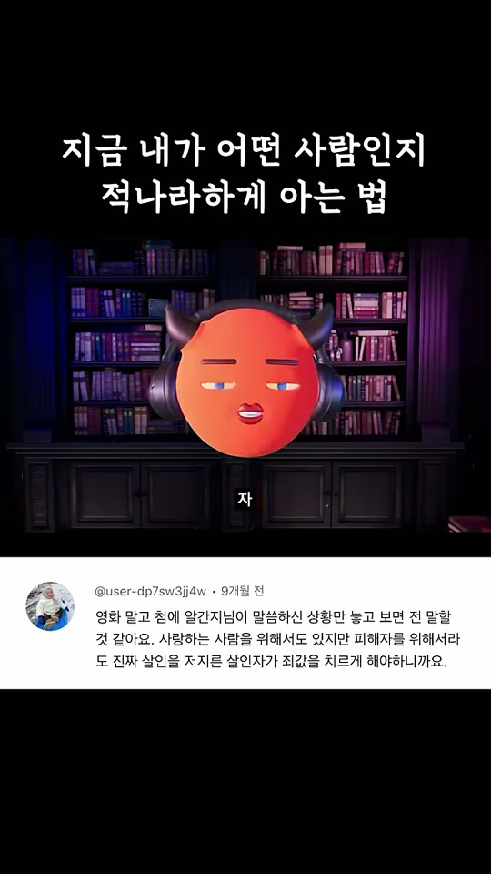
호스트(머리+뿔+헤드폰)
호스트 점프줌 1.3~1.5x
고정 제목 2줄
16:9 밴드
하단 자막
댓글 카드
샷MCU → MS → MCU(점프줌)앵글아이레벨 정면카메라병합: 검출샷 12(16.867~17.167)+13(17.167~21.8). 16.867~18.0 1.3배 확대 상태('자, 궁금하시죠?'), 18.0 원래 크기(미검출 컷), 21.0 다시 1.3배('답해보시죠'), 21.7~21.8 방사형 줌블러 whoosh구도호스트 정중앙, 확대/기본 교대동작'궁금하시죠?'에서 곁눈질+입 삐죽, '답해보시죠'에서 정면 응시대사알간지: 자, 궁금하시죠? 영상의 본론으로 들어가기 전에 우선 이 질문에 한번 답해보시죠.화면 자막'자'(16.87) → '궁금하시죠?'(17.17) → '영상이 본론으로 들어가기 전에'(18.00) → '우선 이 질문에 한 번'(19.80) → '답해보시죠'(21.00)들어오는 전환하드컷(밈 → 확대 호스트)효과음/음악17.133 댓글 ②→③, 21.7 줌블러 whoosh(추정)역할궁금증 확인 + 참여형 질문으로 전환(시청자를 '답하는 사람'으로 만듦)
1순위
minimax-h3한국어 대사 립싱크+오디오 동시 생성, 무료 — 토킹 A롤 기본
2순위
kling-v3-omni레퍼런스 이미지로 아바타 얼굴·헤드폰 일관성 유지하며 립싱크
3순위
veo-3-13D 클레이 질감·보라 림라이트 재현력, 대사 오디오 포함
① 이미지 프롬프트 (원본 클론)16:9 frame, stylized 3D clay-like faceless devil avatar head: perfectly round matte coral-red head (#FE6D48 lit, #EE3B2E base), two short curved dark purple-black horns, oversized charcoal-black over-ear headphones with a violet rim light, almond eyes with pale peach sclera and cobalt-blue irises, thick straight dark-red eyebrows, no nose, glossy plump red lips (#C45C74 highlight) slightly pouting, no body, no neck, head centered filling 75% of frame height, eye-level straight-on, teasing sideways glance, pout, in front of a dark gothic home-library backdrop: tall dark-wood bookshelves packed with red, purple and navy books, cabinet doors at the bottom, purple velvet curtains at both edges, deep violet-blue moody light, faint haze, clean stylized 3D render, soft frontal key light, violet rim light, 50mm, background slightly soft, 16:9 landscape frame
② 영상 프롬프트 (원본 클론)4.9s, locked-off camera, the avatar talks straight to camera with small lip-sync mouth shapes, starts at 1.3x zoom with a teasing sideways glance, hard cut to normal size at 1.1s, hard 1.3x again at 4.1s, final 0.1s radial zoom blur, subtle idle head bob, background static. Korean female voice, fast casual storytelling tone, lip-sync line: "자 궁금하시죠? 영상의 본론으로 들어가기 전에 우선 이 질문에 한번 답해보시죠"
③ 동물 버전 이미지 프롬프트16:9 frame, stylized 3D clay-like hamster host 'Hamzzi' (head only): round fluffy golden-orange hamster head with cream cheeks and tiny round ears, two tiny curved dark purple devil horns, oversized charcoal-black over-ear headphones with a violet rim light, big glossy black eyes with white catchlights, thin expressive dark brows, tiny pink nose, small pouting mouth, no body, head centered filling 75% of frame height, eye-level straight-on, teasing sideways glance, in front of a dark gothic home-library backdrop: tall dark-wood bookshelves packed with red, purple and navy books, cabinet doors at the bottom, purple velvet curtains at both edges, deep violet-blue moody light, faint haze, clean stylized 3D render, soft frontal key light, violet rim light, 50mm, background slightly soft, 16:9 landscape frame
④ 동물 버전 영상 프롬프트4.9s, locked-off camera, the hamster host talks straight to camera with small lip-sync mouth shapes, starts zoomed 1.3x teasing, normal at 1.1s, 1.3x again at 4.1s, radial zoom blur at end, subtle idle head bob, background static. Korean female voice, fast casual storytelling tone, lip-sync line: "자 궁금하시죠? 영상의 본론으로 들어가기 전에 우선 이 질문에 한번 답해보시죠"
네거티브text, subtitles, watermark, logo, body, neck, hands, arms, human skin, nose on the avatar, extra eyes, deformed lips, multiple heads, photoreal human face, vertical 9:16 crop, letterbox bars, blurry, jpeg artifacts
컷 14 · 딜레마 설정 1 — 2인칭 가정으로 몰입
21.8s → 28.767s (6.967s)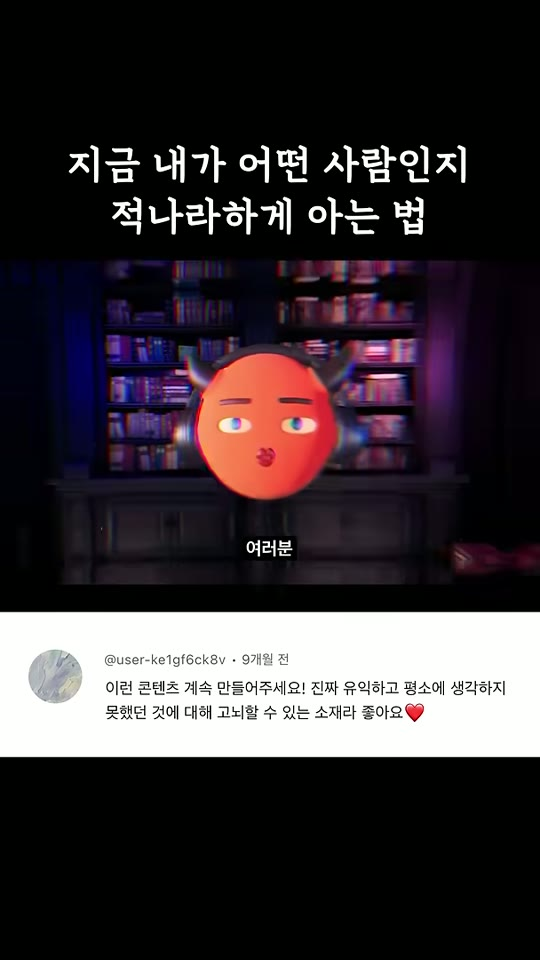
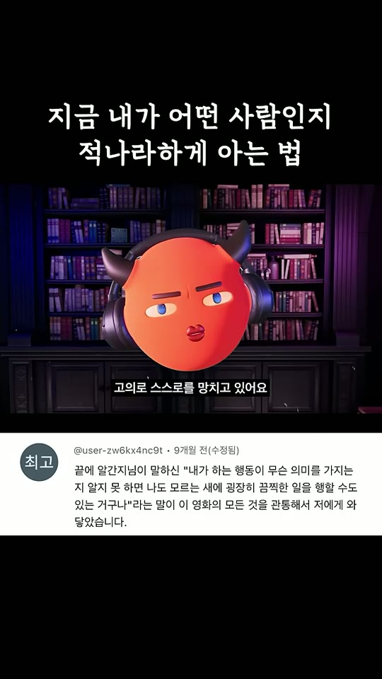
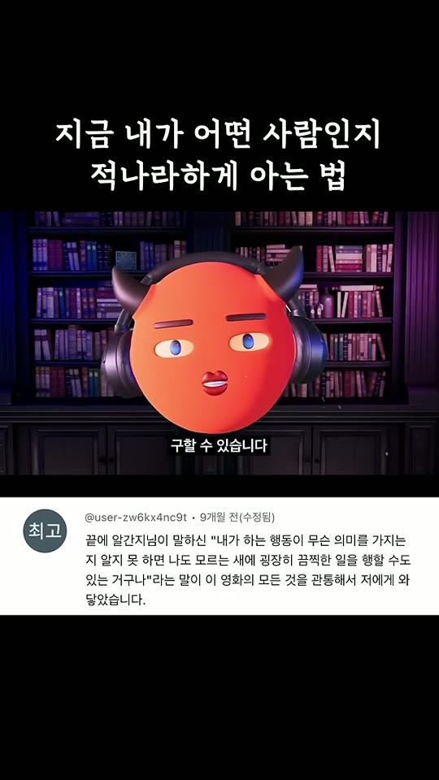
호스트(머리+뿔+헤드폰)
호스트 점프줌 1.3~1.5x
고정 제목 2줄
16:9 밴드
하단 자막
댓글 카드
샷MS(줌아웃 착지) → 27.77 점프줌앵글아이레벨 정면카메라21.8~22.0 0.75배→1.0 줌아웃 착지(블러 whoosh 받기), 27.77 1.3배 하드 점프(미검출) '구할 수 있습니다'구도호스트 정중앙동작진지한 가정법 질문, '망치고 있어요'에서 눈썹 찡그림대사알간지: 여러분, 만약 어떤 사람이 고의로 스스로를 망치고 있어요. 여러분이 진실을 말하면 그 사람을 구할 수 있습니다.화면 자막'여러분'(21.80) → '만약 어떤 사람이'(22.30) → '고의로 스스로를 망치고 있어요'(23.60) → '여러분이 진실을 말하면'(25.70) → '그 사람을'(27.17) → '구할 수 있습니다'(27.77)들어오는 전환줌블러 whoosh 전환(21.7~22.0)효과음/음악22.133 댓글 ③→④역할딜레마 설정 1 — 2인칭 가정으로 몰입
1순위
minimax-h3한국어 대사 립싱크+오디오 동시 생성, 무료 — 토킹 A롤 기본
2순위
kling-v3-omni레퍼런스 이미지로 아바타 얼굴·헤드폰 일관성 유지하며 립싱크
3순위
veo-3-13D 클레이 질감·보라 림라이트 재현력, 대사 오디오 포함
① 이미지 프롬프트 (원본 클론)16:9 frame, stylized 3D clay-like faceless devil avatar head: perfectly round matte coral-red head (#FE6D48 lit, #EE3B2E base), two short curved dark purple-black horns, oversized charcoal-black over-ear headphones with a violet rim light, almond eyes with pale peach sclera and cobalt-blue irises, thick straight dark-red eyebrows, no nose, glossy plump red lips (#C45C74 highlight) slightly pouting, no body, no neck, head centered filling 60% of frame height, eye-level straight-on, serious concerned frown, in front of a dark gothic home-library backdrop: tall dark-wood bookshelves packed with red, purple and navy books, cabinet doors at the bottom, purple velvet curtains at both edges, deep violet-blue moody light, faint haze, clean stylized 3D render, soft frontal key light, violet rim light, 50mm, background slightly soft, 16:9 landscape frame
② 영상 프롬프트 (원본 클론)7.0s, locked-off camera, the avatar talks straight to camera with small lip-sync mouth shapes, lands from a quick zoom-out (0.75x to 1.0x in 0.2s), serious frown, hard 1.3x punch-in at 5.97s, subtle idle head bob, background static. Korean female voice, fast casual storytelling tone, lip-sync line: "여러분 만약 어떤 사람이 고의로 스스로를 망치고 있어요 여러분이 진실을 말하면 그 사람을 구할 수 있습니다"
③ 동물 버전 이미지 프롬프트16:9 frame, stylized 3D clay-like hamster host 'Hamzzi' (head only): round fluffy golden-orange hamster head with cream cheeks and tiny round ears, two tiny curved dark purple devil horns, oversized charcoal-black over-ear headphones with a violet rim light, big glossy black eyes with white catchlights, thin expressive dark brows, tiny pink nose, small pouting mouth, no body, head centered filling 60% of frame height, eye-level straight-on, serious concerned frown, in front of a dark gothic home-library backdrop: tall dark-wood bookshelves packed with red, purple and navy books, cabinet doors at the bottom, purple velvet curtains at both edges, deep violet-blue moody light, faint haze, clean stylized 3D render, soft frontal key light, violet rim light, 50mm, background slightly soft, 16:9 landscape frame
④ 동물 버전 영상 프롬프트7.0s, locked-off camera, the hamster host talks straight to camera with small lip-sync mouth shapes, quick zoom-out landing, serious frown, ears flatten on '망치고', hard 1.3x punch-in at 5.97s, subtle idle head bob, background static. Korean female voice, fast casual storytelling tone, lip-sync line: "여러분 만약 어떤 사람이 고의로 스스로를 망치고 있어요 여러분이 진실을 말하면 그 사람을 구할 수 있습니다"
네거티브text, subtitles, watermark, logo, body, neck, hands, arms, human skin, nose on the avatar, extra eyes, deformed lips, multiple heads, photoreal human face, vertical 9:16 crop, letterbox bars, blurry, jpeg artifacts
컷 15 · 양자택일 질문(댓글 토론 트리거) — 점프줌 리듬으로 압박
28.767s → 34.233s (5.466s)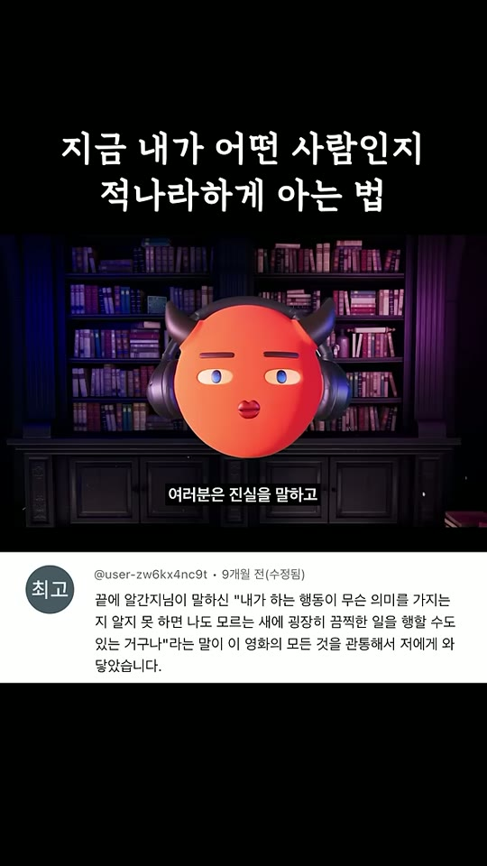
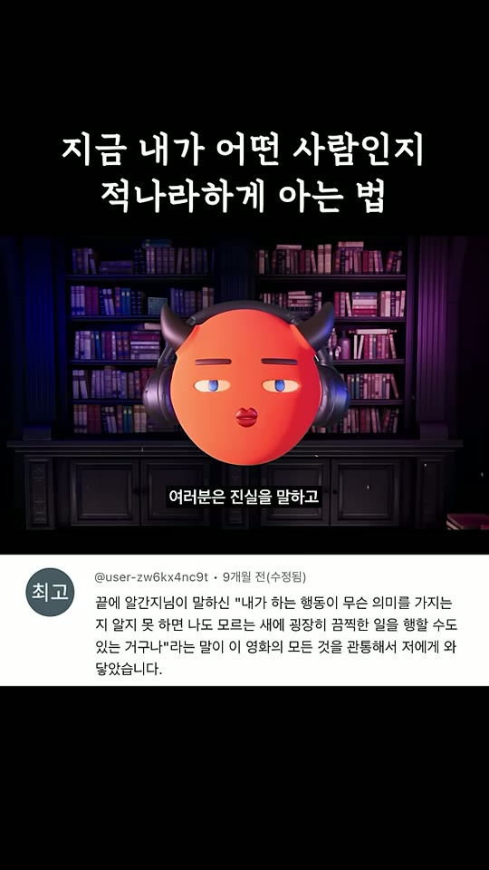
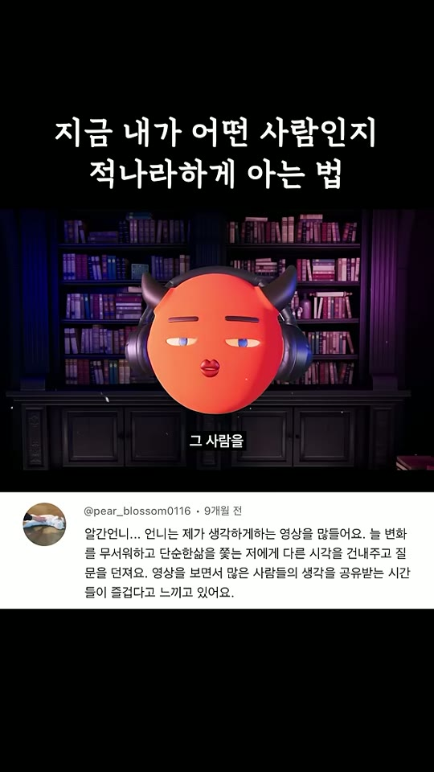
호스트(머리+뿔+헤드폰)
호스트 점프줌 1.3~1.5x
고정 제목 2줄
16:9 밴드
하단 자막
댓글 카드
샷MS ↔ MCU 점프줌 교대앵글아이레벨 정면카메라병합: 검출샷 15~19 (28.767/30.9/31.567/32.8/33.567). 비트 — 28.767 기본 '여러분은 진실을 말하고 그 사람을' / 30.9 1.3배 '구할 건가요?' / 31.567 기본 '혹은 그냥 그대로' / 32.8 1.3배 '두실 건가요?' / 33.567 1.6배 최대 확대 '예를 들어'구도호스트 정중앙, 질문 끝마다 확대 = 시청자에게 들이밀기동작양자택일 질문을 던지며 점점 다가옴(확대 누적)대사알간지: 여러분은 진실을 말하고 그 사람을 구할 건가요? 혹은 그냥 그대로 두실 건가요? 예를 들어화면 자막'여러분은 진실을 말하고'(28.77) → '그 사람을'(30.13) → '구할 건가요?'(30.90) → '혹은 그냥 그대로'(31.57) → '두실 건가요?'(32.80) → '예를 들어'(33.57)들어오는 전환하드컷(점프줌 리셋)효과음/음악29.9 댓글 ④→⑤. 각 점프줌 '툭'(추정)역할양자택일 질문(댓글 토론 트리거) — 점프줌 리듬으로 압박
1순위
minimax-h3한국어 대사 립싱크+오디오 동시 생성, 무료 — 토킹 A롤 기본
2순위
kling-v3-omni레퍼런스 이미지로 아바타 얼굴·헤드폰 일관성 유지하며 립싱크
3순위
veo-3-13D 클레이 질감·보라 림라이트 재현력, 대사 오디오 포함
① 이미지 프롬프트 (원본 클론)16:9 frame, stylized 3D clay-like faceless devil avatar head: perfectly round matte coral-red head (#FE6D48 lit, #EE3B2E base), two short curved dark purple-black horns, oversized charcoal-black over-ear headphones with a violet rim light, almond eyes with pale peach sclera and cobalt-blue irises, thick straight dark-red eyebrows, no nose, glossy plump red lips (#C45C74 highlight) slightly pouting, no body, no neck, head centered filling 60% of frame height, eye-level straight-on, questioning raised brows, in front of a dark gothic home-library backdrop: tall dark-wood bookshelves packed with red, purple and navy books, cabinet doors at the bottom, purple velvet curtains at both edges, deep violet-blue moody light, faint haze, clean stylized 3D render, soft frontal key light, violet rim light, 50mm, background slightly soft, 16:9 landscape frame
② 영상 프롬프트 (원본 클론)5.5s, locked-off camera, the avatar talks straight to camera with small lip-sync mouth shapes, alternating hard cuts between normal and 1.3x zoom on each question end, final 1.6x at 4.8s, subtle idle head bob, background static. Korean female voice, fast casual storytelling tone, lip-sync line: "여러분은 진실을 말하고 그 사람을 구할 건가요? 혹은 그냥 그대로 두실 건가요? 예를 들어"
③ 동물 버전 이미지 프롬프트16:9 frame, stylized 3D clay-like hamster host 'Hamzzi' (head only): round fluffy golden-orange hamster head with cream cheeks and tiny round ears, two tiny curved dark purple devil horns, oversized charcoal-black over-ear headphones with a violet rim light, big glossy black eyes with white catchlights, thin expressive dark brows, tiny pink nose, small pouting mouth, no body, head centered filling 60% of frame height, eye-level straight-on, questioning raised brows, in front of a dark gothic home-library backdrop: tall dark-wood bookshelves packed with red, purple and navy books, cabinet doors at the bottom, purple velvet curtains at both edges, deep violet-blue moody light, faint haze, clean stylized 3D render, soft frontal key light, violet rim light, 50mm, background slightly soft, 16:9 landscape frame
④ 동물 버전 영상 프롬프트5.5s, locked-off camera, the hamster host talks straight to camera with small lip-sync mouth shapes, alternating normal/1.3x hard zooms on each question, final 1.6x at 4.8s, nose twitch, subtle idle head bob, background static. Korean female voice, fast casual storytelling tone, lip-sync line: "여러분은 진실을 말하고 그 사람을 구할 건가요? 혹은 그냥 그대로 두실 건가요? 예를 들어"
네거티브text, subtitles, watermark, logo, body, neck, hands, arms, human skin, nose on the avatar, extra eyes, deformed lips, multiple heads, photoreal human face, vertical 9:16 crop, letterbox bars, blurry, jpeg artifacts
컷 20 · 구체 상황 제시(원작 영화 장면 차용, 제목은 끝까지 미공개 — 추정: 문맹 비밀+전범 재판 설정의 소설 원
34.233s → 41.5s (7.267s)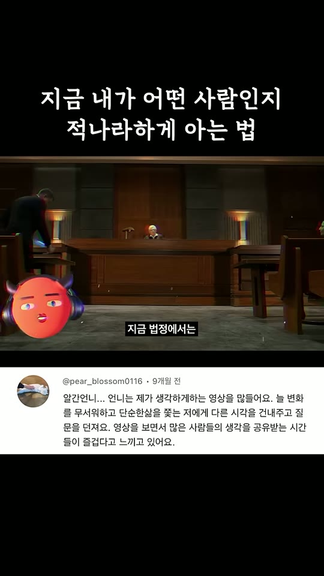
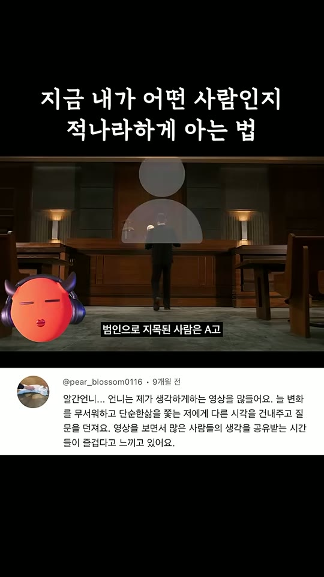
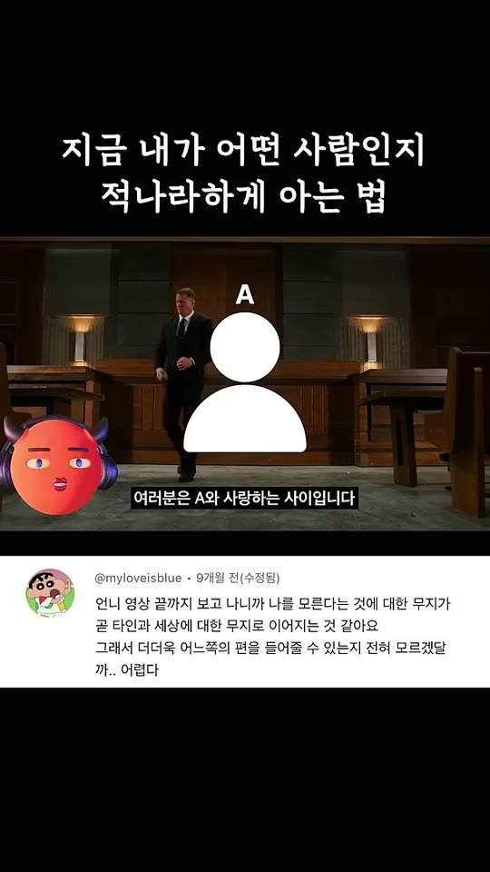
법정 판사석
A 실루엣 아이콘
호스트 PIP 좌하단
고정 제목 2줄
16:9 밴드
하단 자막
댓글 카드
샷WS 법정 B롤 + 호스트 PIP 좌하단 → A 아이콘앵글아이레벨 약간 로우카메라고정 와이드(원본 영화 장면, 인물이 걸어 지나감). 34.233 RGB 글리치 2프레임 전환. 37.83 흰 사람 실루엣 아이콘 'A'가 중앙에 페이드인(회색→흰, 400ms)구도어두운 목재 법정(판사석·램프) 전경, 호스트 PIP 좌하단, 37.8 이후 중앙에 'A' 실루엣 아이콘(밴드 높이 45%)동작법정에 사람들이 오가며 재판 준비, 호스트는 설명대사알간지: 지금 법정에서는 살인에 대한 재판이 진행되고 있습니다. 범인으로 지목된 사람은 A고, 여러분은 A와 사랑하는 사이입니다.화면 자막'지금 법정에서는'(34.23) → '살인에 대한 재판이'(35.37) → '진행되고 있습니다'(36.77) → '범인으로 지목된 사람은 A고'(37.83) → '여러분은 A와 사랑하는 사이입니다'(39.63)들어오는 전환RGB 스플릿 글리치 컷(2프레임)효과음/음악법정 앰비언스(추정), 37.83 아이콘 팝. 39.033 댓글 ⑤→⑥역할구체 상황 제시(원작 영화 장면 차용, 제목은 끝까지 미공개 — 추정: 문맹 비밀+전범 재판 설정의 소설 원작 영화)
1순위
veo-3-1실내외 환경 B롤(법정·폴리스라인) 사실감
2순위
kling-v3느린 달리/팬 카메라 무브 안정
3순위
wan-v3-0저비용 환경 B롤 변주
① 이미지 프롬프트 (원본 클론)16:9 frame, cinematic wide shot of a dim wood-paneled 1960s European courtroom, empty judges' bench with brass desk lamps, dark wooden pews, fictional clerks in dark suits walking across, muted brown palette, soft practical lighting
② 영상 프롬프트 (원본 클론)7.2s, locked-off wide, two fictional clerks walk across frame and one bends to arrange papers, lamps glow; at 3.6s a flat white person-silhouette icon labeled 'A' fades in at center (graphic layer)
③ 동물 버전 이미지 프롬프트16:9 frame, 3D stylized miniature courtroom of wood-paneled furniture sized for small animals, brass lamps, fictional mouse clerks in dark suits walking, muted brown palette; bottom-left Hamzzi host head
④ 동물 버전 영상 프롬프트7.2s, mouse clerks scurry across the miniature courtroom, then a white silhouette icon 'A' fades in at center; Hamzzi PIP talks
네거티브text, subtitles, watermark, logo, body, neck, hands, arms, human skin, nose on the avatar, extra eyes, deformed lips, multiple heads, photoreal human face, vertical 9:16 crop, letterbox bars, blurry, jpeg artifacts
컷 21 · 감정 이입 유도 — 시청자가 A에 자기 사람을 대입
41.5s → 45.833s (4.333s)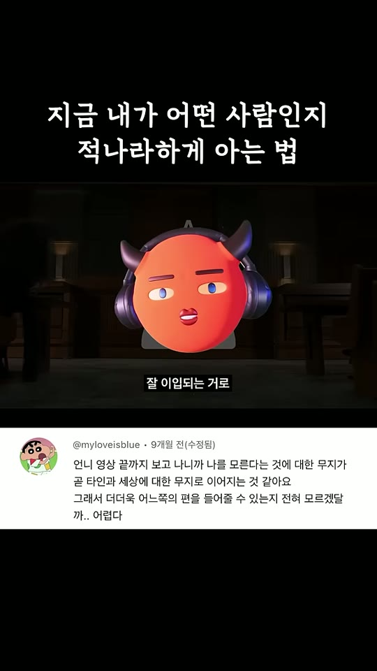
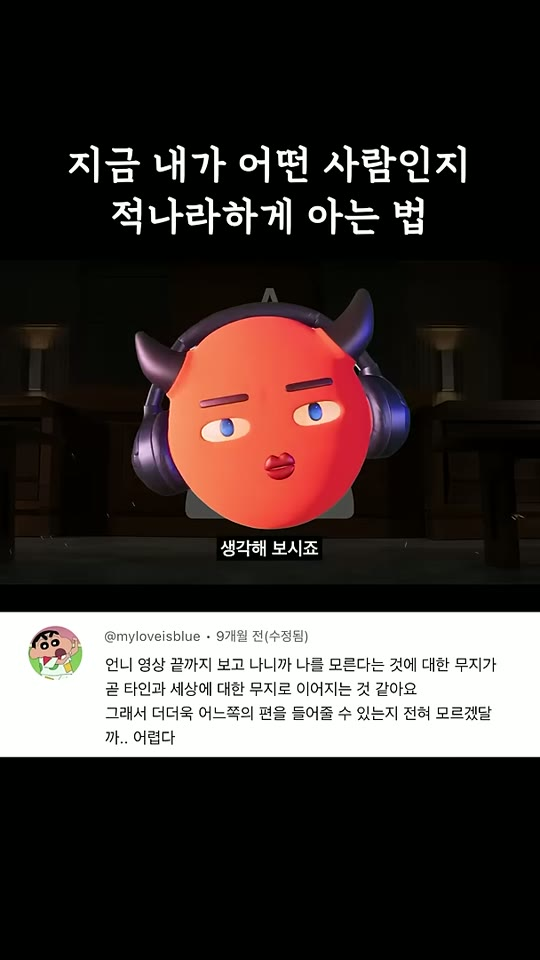
호스트(머리+뿔+헤드폰)
호스트 점프줌 1.3~1.5x
고정 제목 2줄
16:9 밴드
하단 자막
댓글 카드
샷MS(어두운 법정 배경) → 45.17 점프줌앵글아이레벨 정면카메라고정. 배경을 흐린 법정으로 교체한 호스트 셋업, 45.17 1.3배 하드 점프(미검출) '생각해 보시죠'구도호스트 정중앙, 뒤로 어둡게 블러된 법정 램프동작청자에게 A를 고르라고 권하며 한쪽 눈썹 올림대사알간지: 가족, 친구, 연인 중에 잘 이입되는 거로 하나 골라잡아서 생각해 보시죠.화면 자막'가족, 친구, 연인 중에'(41.50) → '잘 이입되는 거로'(43.17) → '하나 골라잡아서'(44.23) → '생각해 보시죠'(45.17)들어오는 전환하드컷(B롤 → 호스트, 배경만 법정 톤으로)효과음/음악없음(BGM 베드)역할감정 이입 유도 — 시청자가 A에 자기 사람을 대입
1순위
minimax-h3한국어 대사 립싱크+오디오 동시 생성, 무료 — 토킹 A롤 기본
2순위
kling-v3-omni레퍼런스 이미지로 아바타 얼굴·헤드폰 일관성 유지하며 립싱크
3순위
veo-3-13D 클레이 질감·보라 림라이트 재현력, 대사 오디오 포함
① 이미지 프롬프트 (원본 클론)16:9 frame, stylized 3D clay-like faceless devil avatar head: perfectly round matte coral-red head (#FE6D48 lit, #EE3B2E base), two short curved dark purple-black horns, oversized charcoal-black over-ear headphones with a violet rim light, almond eyes with pale peach sclera and cobalt-blue irises, thick straight dark-red eyebrows, no nose, glossy plump red lips (#C45C74 highlight) slightly pouting, no body, no neck, head centered filling 60% of frame height, eye-level straight-on, inviting raised brow, in front of a dark blurred wood-paneled courtroom with warm brass lamps, heavy bokeh, clean stylized 3D render, soft frontal key light, violet rim light, 50mm, background slightly soft, 16:9 landscape frame
② 영상 프롬프트 (원본 클론)4.3s, locked-off camera, the avatar talks straight to camera with small lip-sync mouth shapes, inviting tone, one brow raised, hard 1.3x punch-in at 3.67s, subtle idle head bob, background static. Korean female voice, fast casual storytelling tone, lip-sync line: "가족 친구 연인 중에 잘 이입되는 거로 하나 골라잡아서 생각해 보시죠"
③ 동물 버전 이미지 프롬프트16:9 frame, stylized 3D clay-like hamster host 'Hamzzi' (head only): round fluffy golden-orange hamster head with cream cheeks and tiny round ears, two tiny curved dark purple devil horns, oversized charcoal-black over-ear headphones with a violet rim light, big glossy black eyes with white catchlights, thin expressive dark brows, tiny pink nose, small pouting mouth, no body, head centered filling 60% of frame height, eye-level straight-on, inviting raised brow, in front of a dark blurred wood-paneled courtroom with warm brass lamps, heavy bokeh, clean stylized 3D render, soft frontal key light, violet rim light, 50mm, background slightly soft, 16:9 landscape frame
④ 동물 버전 영상 프롬프트4.3s, locked-off camera, the hamster host talks straight to camera with small lip-sync mouth shapes, inviting tone, brow raised, hard 1.3x punch-in at 3.67s, subtle idle head bob, background static. Korean female voice, fast casual storytelling tone, lip-sync line: "가족 친구 연인 중에 잘 이입되는 거로 하나 골라잡아서 생각해 보시죠"
네거티브text, subtitles, watermark, logo, body, neck, hands, arms, human skin, nose on the avatar, extra eyes, deformed lips, multiple heads, photoreal human face, vertical 9:16 crop, letterbox bars, blurry, jpeg artifacts
컷 22 · 비밀 공개 = 딜레마의 핵심 정보. '나만 아는 비밀'로 책임감 부여
45.833s → 54.967s (9.134s)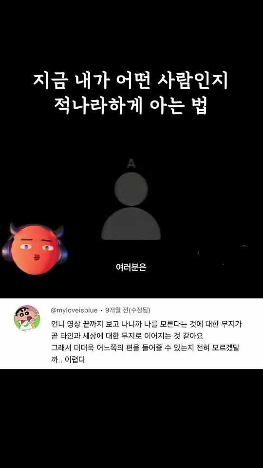
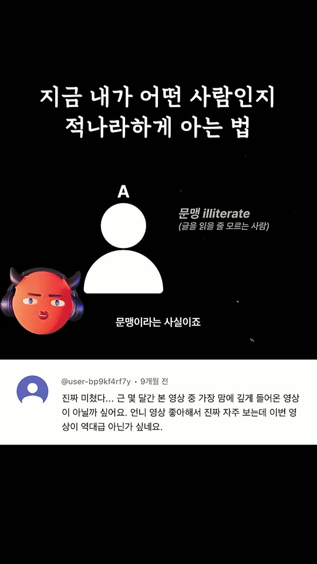
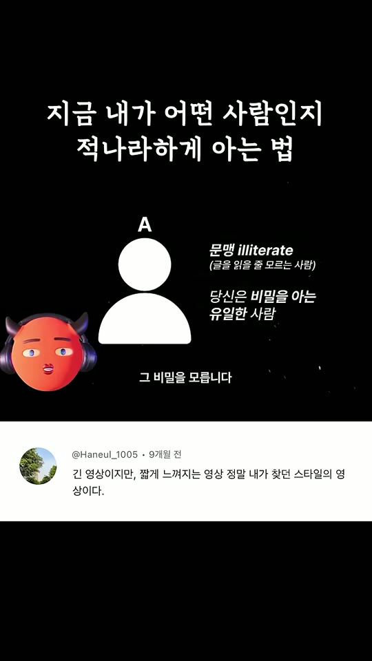
A 실루엣
우측 정의 텍스트
호스트 PIP 좌하단
고정 제목 2줄
16:9 밴드
하단 자막
댓글 카드
샷그래픽 설명 카드 + 호스트 PIP 좌하단앵글정면카메라고정. 45.833 검정 배경에 회색 'A' 실루엣 페이드인 → 48.9 흰색으로 밝아짐, 49.9 우측 '문맹 illiterate / (글을 읽을 줄 모르는 사람)' 텍스트 팝, 51.0 '당신은 비밀을 아는 유일한 사람' 페이드인. 13.0~ 추가 컷 없음구도검정 밴드 중앙-좌측에 A 실루엣(밴드 높이 45%), 우측에 2단 텍스트, 호스트 PIP 좌하단동작PIP 호스트가 비밀을 털어놓듯 설명대사알간지: 여러분은, 여러분이 사랑하는 A의 비밀을 알고 있습니다. 바로 A가 문맹이라는 사실이죠. 님들 빼고는 아무도 A가 문맹이라는 그 비밀을 모릅니다.화면 자막'여러분은'(45.83) → '여러분이 사랑하는 A의 비밀을 알고 있습니다'(46.37) → '바로 A가'(48.90) → '문맹이라는 사실이죠'(49.73) → '님들 빼고는'(51.13) → '아무도'(52.07) → 'A가 문맹이라는'(52.70) → '그 비밀을 모릅니다'(53.73). 그래픽 텍스트: '문맹 illiterate'(흰 볼드 이탤릭) + '(글을 읽을 줄 모르는 사람)'(회색 소형), '당신은 비밀을 아는 유일한 사람'(흰 볼드, '비밀을' 강조)들어오는 전환페이드(검정으로 300ms)효과음/음악49.9·51.0 텍스트 팝(추정). 46.667 댓글 ⑥→⑦, 53.4 ⑦→⑧역할비밀 공개 = 딜레마의 핵심 정보. '나만 아는 비밀'로 책임감 부여
1순위
(AI 불필요) FFmpeg/HyperFrames 그래픽단색 카드+텍스트 박스+슬라이드 모션은 그래픽으로 100% 재현
2순위
minimax-h3PIP 호스트 립싱크
① 이미지 프롬프트 (원본 클론)16:9 frame, pure black background, a flat white generic person-silhouette icon (circle head + rounded shoulders) with a bold letter 'A' above it at center-left, empty right side for text, minimal infographic
② 영상 프롬프트 (원본 클론)9.1s motion graphic: silhouette fades in grey (0-0.5s) and brightens to white at 3.1s; at 4.1s italic white text '문맹 illiterate' and a small grey subtitle pop in on the right; at 5.2s a second line fades in
③ 동물 버전 이미지 프롬프트16:9 frame, pure black background, a flat white hamster-shaped silhouette icon (round ears) with a bold letter 'A' above it, empty right side; bottom-left Hamzzi host head
④ 동물 버전 영상 프롬프트9.1s: hamster silhouette 'A' fades in grey then white, right-side text pops in; Hamzzi PIP whispers the secret
네거티브any character, faces, photo, 3D objects, gradients, logo, watermark, misspelled Korean text
컷 23 · 반전 장치 투입(증거 vs 비밀) — 결론 직전 긴장
54.967s → 58.267s (3.3s)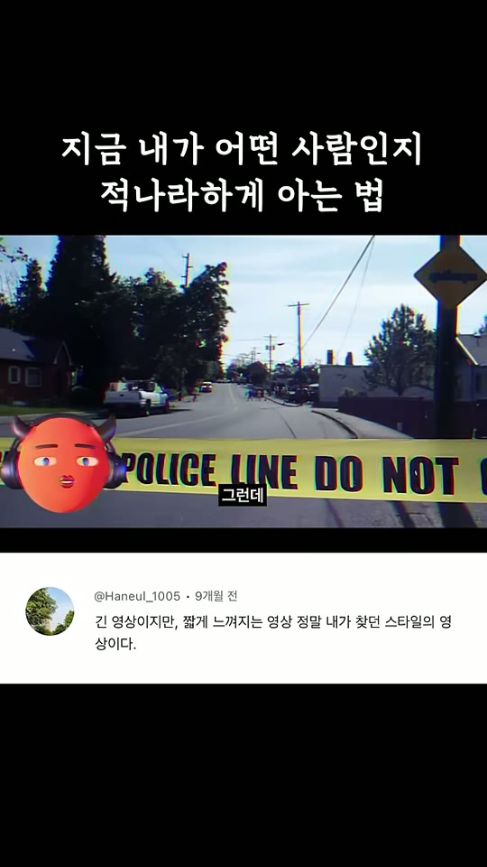
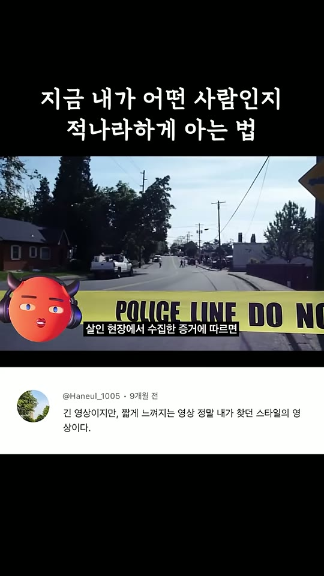
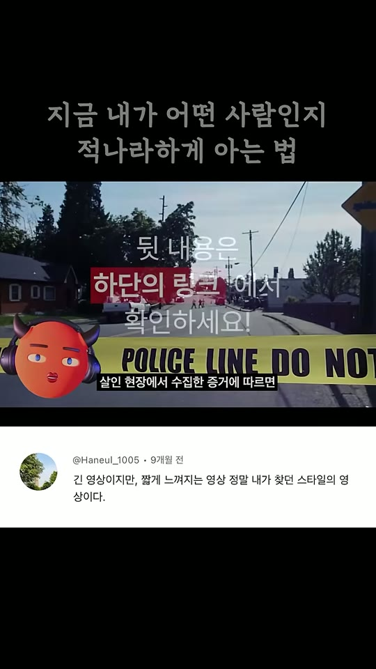
폴리스 라인 테이프
호스트 PIP 좌하단
고정 제목 2줄
16:9 밴드
하단 자막
댓글 카드
샷MWS 사건현장 B롤 + 호스트 PIP앵글로우앵글(테이프 전경)카메라고정/미세 슬로 푸시(추정). 전경에 노란 'POLICE LINE DO NOT CROSS' 테이프가 화면 하단 가로지름. 57.9~58.3 엔드카드가 겹치며 페이드구도교외 주택가 도로, 전경 하단 1/4에 폴리스 테이프, 호스트 PIP 좌하단동작조용한 사건 현장, 호스트가 긴장감 있게 설명대사알간지: 그런데 경찰이 살인 현장에서 수집한 증거에 따르면화면 자막'그런데'(54.97) → '경찰이'(55.57) → '살인 현장에서 수집한 증거에 따르면'(56.23)들어오는 전환하드컷효과음/음악사건현장 앰비언스·먼 사이렌(추정)역할반전 장치 투입(증거 vs 비밀) — 결론 직전 긴장
1순위
veo-3-1실내외 환경 B롤(법정·폴리스라인) 사실감
2순위
kling-v3느린 달리/팬 카메라 무브 안정
3순위
wan-v3-0저비용 환경 B롤 변주
① 이미지 프롬프트 (원본 클론)16:9 frame, live-action crime-scene B-roll: quiet suburban street with pine trees and houses on an overcast day, yellow 'POLICE LINE DO NOT CROSS' tape stretched across the lower foreground, low angle, desaturated documentary look
② 영상 프롬프트 (원본 클론)3.3s, very slow push-in, tape flutters in the wind, no people
③ 동물 버전 이미지 프롬프트16:9 frame, miniature suburban street diorama for small animals, yellow police tape across the foreground, overcast, low angle; bottom-left Hamzzi host head looking serious
④ 동물 버전 영상 프롬프트3.3s slow push-in, tape flutters; Hamzzi PIP narrates seriously
네거티브text, subtitles, watermark, logo, body, neck, hands, arms, human skin, nose on the avatar, extra eyes, deformed lips, multiple heads, photoreal human face, vertical 9:16 crop, letterbox bars, blurry, jpeg artifacts
컷 24 · 클리프행어 CTA — 문맹인데 '글을 읽고 쓸 수 있다'는 증거 → 모순 직전 절단으로 롱
58.267s → 60.047s (1.78s)
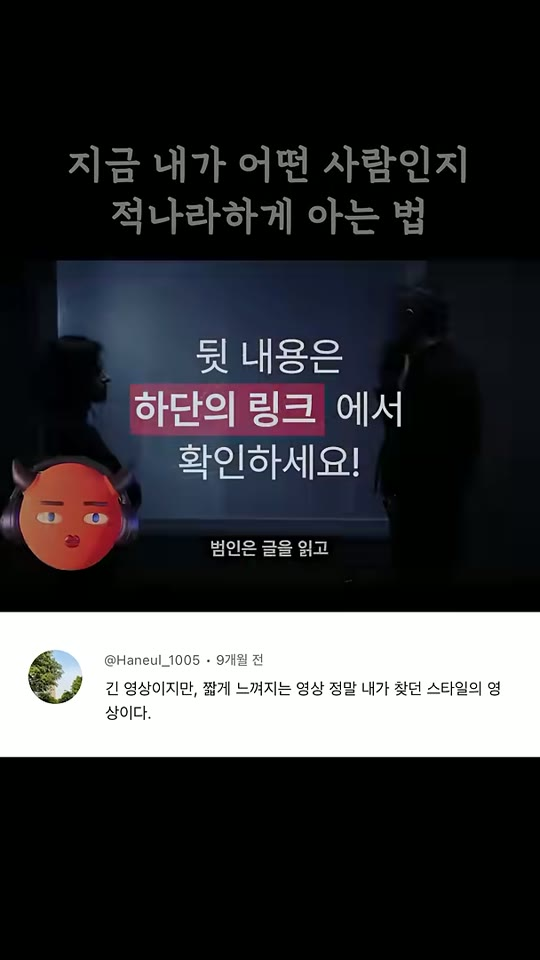
엔드카드 텍스트
하이라이트 '하단의 링크'
빨간 이중 쉐브론
고정 제목 2줄
16:9 밴드
하단 자막
댓글 카드
샷엔드카드(암막 오버레이)앵글정면카메라병합: 검출샷 24(58.267~58.4)+25(58.4~60.047). 58.0~58.6 밴드 암막(측정: 평균 휘도 108→15), 57.8~58.6 제목 페이드아웃, 58.4 댓글 카드 하드 제거(측정), 쉐브론 바운스구도밴드 중앙 3줄 텍스트(y 381~538 = 35.3~49.8%), '하단의 링크'만 빨간 박스, 그 아래 빨간 이중 쉐브론(y≈58~64%)동작화면이 어두워지며 CTA, 대사는 문장 중간에 끊김대사알간지: 범인은 글을 읽고 (쓸 수 있…) — 절단화면 자막'범인은 글을 읽고'(58.27, 암막 아래 희미). 엔드카드 '뒷 내용은 / [하단의 링크] 에서 / 확인하세요!'들어오는 전환크로스 페이드 암막(600ms)효과음/음악엔드카드 '띵'(추정), 대사 절단역할클리프행어 CTA — 문맹인데 '글을 읽고 쓸 수 있다'는 증거 → 모순 직전 절단으로 롱폼 링크 클릭 유도
1순위
(AI 불필요) FFmpeg/HyperFrames 그래픽단색 카드+텍스트 박스+슬라이드 모션은 그래픽으로 100% 재현
① 이미지 프롬프트 (원본 클론)16:9 frame, near-black dimmed video background, centered three lines of white Korean text '뒷 내용은 / 하단의 링크 에서 / 확인하세요!' with '하단의 링크' on a crimson (#A8191F) highlight box, a double red chevron pointing down below
② 영상 프롬프트 (원본 클론)1.8s motion graphic: background dims to 18% over 0.6s, text fades in 500ms, chevrons bounce 6px every 0.5s
③ 동물 버전 이미지 프롬프트Same end card; optional tiny hamster paw icon pointing down next to the chevrons
④ 동물 버전 영상 프롬프트1.8s: dim, text fade-in, chevrons bounce; hamster paw icon taps downward
네거티브any character, faces, photo, 3D objects, gradients, logo, watermark, misspelled Korean text
✂️ 편집 키트
타임라인0–1.8 단언 훅(0.933 점프줌) → 1.8–8.33 약속(5.567 점프줌) → 8.33–16.87 감정 밈 3연타(공포/사랑/역겨움) → 16.87–21.8 '궁금하시죠?' + 21.7 줌블러 → 21.8–28.77 딜레마 설정 → 28.77–34.23 양자택일 질문 점프줌 연타 → 34.23–41.5 법정 B롤+A 아이콘 → 41.5–45.83 대입 지시 → 45.83–54.97 문맹 비밀 인포그래픽 → 54.97–58.27 폴리스 라인 '증거에 따르면' → 58.27–60.05 엔드카드 CTA. 댓글 교체 9.133/17.133/22.133/29.9/39.033/46.667/53.4, 58.4 제거
FFmpeg 명령# ===== 알간지 쇼츠 9:16 레이아웃 클론 (gLE5fOfzfwk) — PowerShell/bash 직접 실행(새 창 없음) =====
# c*.txt는 UTF-8·LF 줄바꿈으로 저장(CRLF면 빈 줄이 생겨 줄간격 2배 — 실측 확인)
# fontconfig 없는 ffmpeg: drawtext는 fontfile 지정, ass는 작업 폴더 fonts\ 에 malgun.ttf·malgunbd.ttf 복사 후 fontsdir=fonts
# 준비물: band.mp4(16:9 1920x1080 30fps 본편, 음성 포함) / avatar1~8.png(가상 프로필) / c1~8.txt(댓글 본문, 한 줄 28자 내외에서 수동 줄바꿈, 최대 4줄) / subs.ass / chev.png(#A8191F 이중 쉐브론 64x66 투명)
# 1) 밴드 조립 (band_list.txt: 씬 표 start/end 그대로 inpoint/outpoint)
ffmpeg -y -f concat -safe 0 -i band_list.txt -r 30 -c:v libx264 -crf 17 -pix_fmt yuv420p -c:a aac -b:a 192k band.mp4
# 2) 하드 점프줌(1.3x: 0.933~1.8, 5.567~6.467, 16.867~18.0, 21.0~21.8, 27.77~28.767, 30.9~31.567, 32.8~33.567, 45.17~45.833 / 1.6x: 33.567~34.233)
ffmpeg -y -i host_take.mp4 -vf "crop=iw/1.3:ih/1.3:(iw-iw/1.3)/2:(ih-ih/1.3)*0.35,scale=1920:1080:flags=lanczos" -c:a copy punch13.mp4
ffmpeg -y -i host_take.mp4 -vf "crop=iw/1.6:ih/1.6:(iw-iw/1.6)/2:(ih-ih/1.6)*0.35,scale=1920:1080:flags=lanczos" -c:a copy punch16.mp4
# 3) 줌블러 whoosh 전환(21.7~21.8 나감, 21.8~22.0 0.75→1.0 착지)
ffmpeg -y -i seg_in.mp4 -vf "zoompan=z='1+0.6*on/3':d=1:s=1920x1080:fps=30,gblur=sigma=12" -frames:v 3 whoosh_out.mp4
ffmpeg -y -i seg_next.mp4 -vf "scale=w='1920*(0.75+0.25*min(1,t/0.2))':h=-2:eval=frame,pad=1920:1080:(ow-iw)/2:(oh-ih)/2" -c:a copy land.mp4
# 4) RGB 글리치 컷(34.233, 2프레임)
ffmpeg -y -i court.mp4 -vf "rgbashift=rh=-12:bh=12:enable='lt(t,0.07)'" -c:a copy court_glitch.mp4
# 5) B롤/밈 + 호스트 PIP 좌하단(밴드 폭 22%)
ffmpeg -y -i broll.mp4 -i host_alpha.mov -filter_complex "[1:v]scale=430:-1[p];[0:v][p]overlay=6:H-h+40:shortest=1" -c:a copy pip.mp4
# 6) 댓글 카드 PNG 8장(608x162)
ffmpeg -y -f lavfi -i color=white:s=608x162 -i avatar1.png -filter_complex "[1:v]scale=60:60,format=rgba,geq=r='r(X,Y)':g='g(X,Y)':b='b(X,Y)':a='if(lt(hypot(X-30,Y-30),30),255,0)'[av];[0:v][av]overlay=32:28,drawtext=fontfile='C\:/Windows/Fonts/malgun.ttf':text='@fictional_viewer01 • 9개월 전':fontsize=14:fontcolor=0x606060:x=118:y=26,drawtext=fontfile='C\:/Windows/Fonts/malgun.ttf':textfile=c1.txt:fontsize=16:fontcolor=0x0F0F0F:line_spacing=10:x=118:y=54" -frames:v 1 c1.png
ffmpeg -y -f lavfi -i color=white:s=608x162 -i avatar2.png -filter_complex "[1:v]scale=60:60,format=rgba,geq=r='r(X,Y)':g='g(X,Y)':b='b(X,Y)':a='if(lt(hypot(X-30,Y-30),30),255,0)'[av];[0:v][av]overlay=32:28,drawtext=fontfile='C\:/Windows/Fonts/malgun.ttf':text='@fictional_viewer02 • 9개월 전':fontsize=14:fontcolor=0x606060:x=118:y=26,drawtext=fontfile='C\:/Windows/Fonts/malgun.ttf':textfile=c2.txt:fontsize=16:fontcolor=0x0F0F0F:line_spacing=10:x=118:y=54" -frames:v 1 c2.png
ffmpeg -y -f lavfi -i color=white:s=608x162 -i avatar3.png -filter_complex "[1:v]scale=60:60,format=rgba,geq=r='r(X,Y)':g='g(X,Y)':b='b(X,Y)':a='if(lt(hypot(X-30,Y-30),30),255,0)'[av];[0:v][av]overlay=32:28,drawtext=fontfile='C\:/Windows/Fonts/malgun.ttf':text='@fictional_viewer03 • 9개월 전':fontsize=14:fontcolor=0x606060:x=118:y=26,drawtext=fontfile='C\:/Windows/Fonts/malgun.ttf':textfile=c3.txt:fontsize=16:fontcolor=0x0F0F0F:line_spacing=10:x=118:y=54" -frames:v 1 c3.png
ffmpeg -y -f lavfi -i color=white:s=608x162 -i avatar4.png -filter_complex "[1:v]scale=60:60,format=rgba,geq=r='r(X,Y)':g='g(X,Y)':b='b(X,Y)':a='if(lt(hypot(X-30,Y-30),30),255,0)'[av];[0:v][av]overlay=32:28,drawtext=fontfile='C\:/Windows/Fonts/malgun.ttf':text='@fictional_viewer04 • 9개월 전(수정됨)':fontsize=14:fontcolor=0x606060:x=118:y=26,drawtext=fontfile='C\:/Windows/Fonts/malgun.ttf':textfile=c4.txt:fontsize=16:fontcolor=0x0F0F0F:line_spacing=10:x=118:y=54" -frames:v 1 c4.png
ffmpeg -y -f lavfi -i color=white:s=608x162 -i avatar5.png -filter_complex "[1:v]scale=60:60,format=rgba,geq=r='r(X,Y)':g='g(X,Y)':b='b(X,Y)':a='if(lt(hypot(X-30,Y-30),30),255,0)'[av];[0:v][av]overlay=32:28,drawtext=fontfile='C\:/Windows/Fonts/malgun.ttf':text='@fictional_viewer05 • 9개월 전':fontsize=14:fontcolor=0x606060:x=118:y=26,drawtext=fontfile='C\:/Windows/Fonts/malgun.ttf':textfile=c5.txt:fontsize=16:fontcolor=0x0F0F0F:line_spacing=10:x=118:y=54" -frames:v 1 c5.png
ffmpeg -y -f lavfi -i color=white:s=608x162 -i avatar6.png -filter_complex "[1:v]scale=60:60,format=rgba,geq=r='r(X,Y)':g='g(X,Y)':b='b(X,Y)':a='if(lt(hypot(X-30,Y-30),30),255,0)'[av];[0:v][av]overlay=32:28,drawtext=fontfile='C\:/Windows/Fonts/malgun.ttf':text='@fictional_viewer06 • 9개월 전(수정됨)':fontsize=14:fontcolor=0x606060:x=118:y=26,drawtext=fontfile='C\:/Windows/Fonts/malgun.ttf':textfile=c6.txt:fontsize=16:fontcolor=0x0F0F0F:line_spacing=10:x=118:y=54" -frames:v 1 c6.png
ffmpeg -y -f lavfi -i color=white:s=608x162 -i avatar7.png -filter_complex "[1:v]scale=60:60,format=rgba,geq=r='r(X,Y)':g='g(X,Y)':b='b(X,Y)':a='if(lt(hypot(X-30,Y-30),30),255,0)'[av];[0:v][av]overlay=32:28,drawtext=fontfile='C\:/Windows/Fonts/malgun.ttf':text='@fictional_viewer07 • 9개월 전':fontsize=14:fontcolor=0x606060:x=118:y=26,drawtext=fontfile='C\:/Windows/Fonts/malgun.ttf':textfile=c7.txt:fontsize=16:fontcolor=0x0F0F0F:line_spacing=10:x=118:y=54" -frames:v 1 c7.png
ffmpeg -y -f lavfi -i color=white:s=608x162 -i avatar8.png -filter_complex "[1:v]scale=60:60,format=rgba,geq=r='r(X,Y)':g='g(X,Y)':b='b(X,Y)':a='if(lt(hypot(X-30,Y-30),30),255,0)'[av];[0:v][av]overlay=32:28,drawtext=fontfile='C\:/Windows/Fonts/malgun.ttf':text='@fictional_viewer08 • 9개월 전':fontsize=14:fontcolor=0x606060:x=118:y=26,drawtext=fontfile='C\:/Windows/Fonts/malgun.ttf':textfile=c8.txt:fontsize=16:fontcolor=0x0F0F0F:line_spacing=10:x=118:y=54" -frames:v 1 c8.png
# 7) 최종 9:16 합성(밴드 y293, 댓글 y689, 58.4 댓글 하드 제거, 58.0~58.6 암막, 엔드카드·제목은 ASS)
ffmpeg -y -f lavfi -i color=black:s=608x1080:r=30:d=60.047 -i band.mp4 -loop 1 -t 60.047 -i c1.png -loop 1 -t 60.047 -i c2.png -loop 1 -t 60.047 -i c3.png -loop 1 -t 60.047 -i c4.png -loop 1 -t 60.047 -i c5.png -loop 1 -t 60.047 -i c6.png -loop 1 -t 60.047 -i c7.png -loop 1 -t 60.047 -i c8.png -loop 1 -t 60.047 -i chev.png -filter_complex "[1:v]scale=-2:364:flags=lanczos,crop=608:364,setsar=1[band];[0:v][band]overlay=0:293:shortest=1[v0];[v0][2:v]overlay=0:689:enable='between(t,0.0,9.133)'[c0];[c0][3:v]overlay=0:689:enable='between(t,9.133,17.133)'[c1];[c1][4:v]overlay=0:689:enable='between(t,17.133,22.133)'[c2];[c2][5:v]overlay=0:689:enable='between(t,22.133,29.9)'[c3];[c3][6:v]overlay=0:689:enable='between(t,29.9,39.033)'[c4];[c4][7:v]overlay=0:689:enable='between(t,39.033,46.667)'[c5];[c5][8:v]overlay=0:689:enable='between(t,46.667,53.4)'[c6];[c6][9:v]overlay=0:689:enable='between(t,53.4,58.4)'[c7];color=c=black@0.85:s=608x364:r=30:d=60.047,format=rgba,fade=t=in:st=58.0:d=0.6:alpha=1[dim];[c7][dim]overlay=0:293,ass=subs.ass:fontsdir=fonts[v9];[v9][10:v]overlay=272:'627+6*sin(2*PI*2*t)':enable='gte(t,58.3)'[vout]" -map "[vout]" -map 1:a -af "loudnorm=I=-11:TP=-1.0:LRA=4" -c:v libx264 -crf 17 -preset slow -pix_fmt yuv420p -r 30 -c:a aac -b:a 192k -movflags +faststart final_gLE5fOfzfwk_clone.mp4
# ※ 원본 -10.8 LUFS는 매우 큰 편 → 클론 정확도 우선이면 I=-11, 유튜브 표준이면 I=-14
# ※ 햄찌판: host_take/host_alpha만 햄찌 렌더로 교체, 밈·법정·실루엣은 animal 프롬프트 결과로 교체
ASS 자막 스타일[Script Info]
ScriptType: v4.00+
PlayResX: 608
PlayResY: 1080
WrapStyle: 2
ScaledBorderAndShadow: yes
[V4+ Styles]
Format: Name, Fontname, Fontsize, PrimaryColour, SecondaryColour, OutlineColour, BackColour, Bold, Italic, Underline, StrikeOut, ScaleX, ScaleY, Spacing, Angle, BorderStyle, Outline, Shadow, Alignment, MarginL, MarginR, MarginV, Encoding
Style: Cap,Malgun Gothic,25,&H00FFFFFF,&H00FFFFFF,&H66000000,&H66000000,-1,0,0,0,100,100,0,0,3,4,0,2,20,20,451,1
Style: Title,Malgun Gothic,55,&H00FFFFFF,&H00FFFFFF,&H00000000,&H00000000,-1,0,0,0,100,100,0,0,1,0,0,8,20,20,156,1
Style: Info,Malgun Gothic,22,&H00FFFFFF,&H00FFFFFF,&H00000000,&H00000000,-1,-1,0,0,100,100,0,0,1,0,0,4,10,10,0,1
Style: InfoSub,Malgun Gothic,11,&H00B0B0B0,&H00B0B0B0,&H00000000,&H00000000,0,-1,0,0,100,100,0,0,1,0,0,4,10,10,0,1
Style: EndCard,Malgun Gothic,48,&H00FFFFFF,&H00FFFFFF,&H00000000,&H00000000,0,0,0,0,100,100,0,0,1,0,0,5,20,20,0,1
Style: EndHi,Malgun Gothic,48,&H00FFFFFF,&H00FFFFFF,&H001F19A8,&H001F19A8,-1,0,0,0,100,100,0,0,3,6,0,5,20,20,0,1
[Events]
Format: Layer, Start, End, Style, Name, MarginL, MarginR, MarginV, Effect, Text
Dialogue: 0,0:00:00.00,0:00:00.47,Cap,,0,0,0,,제가
Dialogue: 0,0:00:00.47,0:00:00.93,Cap,,0,0,0,,감히
Dialogue: 0,0:00:00.93,0:00:01.80,Cap,,0,0,0,,장담하건대
Dialogue: 0,0:00:01.80,0:00:02.77,Cap,,0,0,0,,이 영화를 보면
Dialogue: 0,0:00:02.77,0:00:04.60,Cap,,0,0,0,,지금의 내가 어떤 사람인지
Dialogue: 0,0:00:04.60,0:00:05.57,Cap,,0,0,0,,아주 적나라하게
Dialogue: 0,0:00:05.57,0:00:06.47,Cap,,0,0,0,,알 수 있습니다
Dialogue: 0,0:00:06.47,0:00:07.13,Cap,,0,0,0,,참고로 저는
Dialogue: 0,0:00:07.13,0:00:08.33,Cap,,0,0,0,,이 영화를 처음 봤을 때
Dialogue: 0,0:00:08.33,0:00:10.33,Cap,,0,0,0,,두려움과 위기감을 느꼈고요
Dialogue: 0,0:00:10.33,0:00:11.57,Cap,,0,0,0,,두 번째로 봤을 때는
Dialogue: 0,0:00:11.57,0:00:13.50,Cap,,0,0,0,,감동과 사랑을 느꼈고
Dialogue: 0,0:00:13.50,0:00:14.83,Cap,,0,0,0,,마지막으로 봤을 때는
Dialogue: 0,0:00:14.83,0:00:16.87,Cap,,0,0,0,,역겨움을 가장 크게 느꼈어요
Dialogue: 0,0:00:16.87,0:00:17.17,Cap,,0,0,0,,자
Dialogue: 0,0:00:17.17,0:00:18.00,Cap,,0,0,0,,궁금하시죠?
Dialogue: 0,0:00:18.00,0:00:19.80,Cap,,0,0,0,,영상이 본론으로 들어가기 전에
Dialogue: 0,0:00:19.80,0:00:21.00,Cap,,0,0,0,,우선 이 질문에 한 번
Dialogue: 0,0:00:21.00,0:00:21.80,Cap,,0,0,0,,답해보시죠
Dialogue: 0,0:00:21.80,0:00:22.30,Cap,,0,0,0,,여러분
Dialogue: 0,0:00:22.30,0:00:23.60,Cap,,0,0,0,,만약 어떤 사람이
Dialogue: 0,0:00:23.60,0:00:25.70,Cap,,0,0,0,,고의로 스스로를 망치고 있어요
Dialogue: 0,0:00:25.70,0:00:27.17,Cap,,0,0,0,,여러분이 진실을 말하면
Dialogue: 0,0:00:27.17,0:00:27.77,Cap,,0,0,0,,그 사람을
Dialogue: 0,0:00:27.77,0:00:28.77,Cap,,0,0,0,,구할 수 있습니다
Dialogue: 0,0:00:28.77,0:00:30.13,Cap,,0,0,0,,여러분은 진실을 말하고
Dialogue: 0,0:00:30.13,0:00:30.90,Cap,,0,0,0,,그 사람을
Dialogue: 0,0:00:30.90,0:00:31.57,Cap,,0,0,0,,구할 건가요?
Dialogue: 0,0:00:31.57,0:00:32.80,Cap,,0,0,0,,혹은 그냥 그대로
Dialogue: 0,0:00:32.80,0:00:33.57,Cap,,0,0,0,,두실 건가요?
Dialogue: 0,0:00:33.57,0:00:34.23,Cap,,0,0,0,,예를 들어
Dialogue: 0,0:00:34.23,0:00:35.37,Cap,,0,0,0,,지금 법정에서는
Dialogue: 0,0:00:35.37,0:00:36.77,Cap,,0,0,0,,살인에 대한 재판이
Dialogue: 0,0:00:36.77,0:00:37.83,Cap,,0,0,0,,진행되고 있습니다
Dialogue: 0,0:00:37.83,0:00:39.63,Cap,,0,0,0,,범인으로 지목된 사람은 A고
Dialogue: 0,0:00:39.63,0:00:41.50,Cap,,0,0,0,,여러분은 A와 사랑하는 사이입니다
Dialogue: 0,0:00:41.50,0:00:43.17,Cap,,0,0,0,,가족, 친구, 연인 중에
Dialogue: 0,0:00:43.17,0:00:44.23,Cap,,0,0,0,,잘 이입되는 거로
Dialogue: 0,0:00:44.23,0:00:45.17,Cap,,0,0,0,,하나 골라잡아서
Dialogue: 0,0:00:45.17,0:00:45.83,Cap,,0,0,0,,생각해 보시죠
Dialogue: 0,0:00:45.83,0:00:46.37,Cap,,0,0,0,,여러분은
Dialogue: 0,0:00:46.37,0:00:48.90,Cap,,0,0,0,,여러분이 사랑하는 A의 비밀을 알고 있습니다
Dialogue: 0,0:00:48.90,0:00:49.73,Cap,,0,0,0,,바로 A가
Dialogue: 0,0:00:49.73,0:00:51.13,Cap,,0,0,0,,문맹이라는 사실이죠
Dialogue: 0,0:00:51.13,0:00:52.07,Cap,,0,0,0,,님들 빼고는
Dialogue: 0,0:00:52.07,0:00:52.70,Cap,,0,0,0,,아무도
Dialogue: 0,0:00:52.70,0:00:53.73,Cap,,0,0,0,,A가 문맹이라는
Dialogue: 0,0:00:53.73,0:00:54.97,Cap,,0,0,0,,그 비밀을 모릅니다
Dialogue: 0,0:00:54.97,0:00:55.57,Cap,,0,0,0,,그런데
Dialogue: 0,0:00:55.57,0:00:56.23,Cap,,0,0,0,,경찰이
Dialogue: 0,0:00:56.23,0:00:58.27,Cap,,0,0,0,,살인 현장에서 수집한 증거에 따르면
Dialogue: 0,0:00:58.27,0:01:00.05,Cap,,0,0,0,,범인은 글을 읽고
Dialogue: 5,0:00:00.00,0:00:58.60,Title,,0,0,0,,{\fad(0,800)}지금 내가 어떤 사람인지\N적나라하게 아는 법
Dialogue: 1,0:00:49.90,0:00:54.97,Info,,0,0,0,,{\pos(372,372)\fad(150,0)}문맹 illiterate
Dialogue: 1,0:00:49.90,0:00:54.97,InfoSub,,0,0,0,,{\pos(372,392)\fad(150,0)}(글을 읽을 줄 모르는 사람)
Dialogue: 1,0:00:51.00,0:00:54.97,Info,,0,0,0,,{\pos(372,428)\fs18\fad(300,0)}당신은 {\b1\c&HFFFFFF&}비밀{\b0}을 아는\N유일한 사람
Dialogue: 6,0:00:58.10,0:01:00.05,EndCard,,0,0,0,,{\pos(304,400)\fad(500,0)}뒷 내용은
Dialogue: 6,0:00:58.10,0:01:00.05,EndHi,,0,0,0,,{\pos(256,460)\fad(500,0)}하단의 링크
Dialogue: 6,0:00:58.10,0:01:00.05,EndCard,,0,0,0,,{\pos(415,460)\fad(500,0)}에서
Dialogue: 6,0:00:58.10,0:01:00.05,EndCard,,0,0,0,,{\pos(304,519)\fad(500,0)}확인하세요!
HyperFrames 편집 프롬프트 (Claude에 그대로 붙여넣기)HyperFrames로 '알간지식 딜레마 티저 쇼츠' 608x1080 30fps 60.05초를 만들어줘(원본 클론 → 호스트만 햄찌로 바꾼 버전도 같은 타임라인).
[고정 레이아웃]
- 캔버스 #000000. 제목 2줄 '지금 내가 어떤 사람인지 / 적나라하게 아는 법' 흰 42px 굵은 고딕 중앙, 줄1 top 164px, 줄2 top 222px. 57800→58600ms opacity 1→0.
- 16:9 밴드 top 293px, 높이 364px(647x364 cover, 좌우 크롭).
- 댓글 카드 top 689px, 608x162 흰 배경, 원형 프로필 60px(left 32, top 28), 핸들 14px #606060(left 118, top 26), 본문 16px #0F0F0F 최대 4줄 line-height 28px(left 118, top 54). 하드 스왑: 0 / 9133 / 17133 / 22133 / 29900 / 39033 / 46667 / 53400ms, 58400ms 즉시 제거. 댓글 내용은 '본편(롱폼)을 끝까지 본 사람의 깊은 감상' 톤으로(핸들은 가상).
- 하단 자막 흰 볼드 19px + rgba(0,0,0,.6) 박스, top 603px 중앙, ass_subtitle 타이밍대로 즉시 교체.
[밴드 타임라인]
0–1800: 서재 호스트, 933ms scale 1.5 하드 점프('장담하건대').
1800–8333: 호스트 기본, 5567–6467 scale 1.4 점프('알 수 있습니다').
8333–10333: 공포 카툰(가상 노란 스펀지형 캐릭터 벌벌) 풀밴드 + 호스트 PIP 좌하단(width 22%, left 6px, bottom -10px).
10333–13500: 분홍 토끼(가상) 황홀 + 하트, PIP 유지.
13500–16867: 가상 금발 여성 역겨움 표정, 15500부터 초록 파리 스티커 6개가 사인파 경로로 날아다님(PIP 머리에도 1개 착지).
16867–21800: 호스트 scale 1.3로 시작('자','궁금하시죠?') → 18000 scale 1 → 21000 scale 1.3('답해보시죠') → 21700–21800 radial blur 12px + scale 1.6 whoosh.
21800–28767: 호스트 scale .75→1(200ms ease-out 착지), 27770 scale 1.3 하드.
28767–34233: 호스트 질문 점프 리듬 — 28767 1.0 / 30900 1.3 / 31567 1.0 / 32800 1.3 / 33567 1.6.
34233–41500: 가상 법정 와이드(첫 2프레임 RGB split 12px) + PIP 좌하단, 37830 중앙에 흰 사람 실루엣+'A' 라벨 opacity 0→1(400ms, 회색→흰).
41500–45833: 흐린 어두운 법정 배경 위 호스트 중앙, 45170 scale 1.3 하드.
45833–54967: 순검정 설명 카드 — 45833 회색 실루엣 A 페이드인(300ms), 48900 흰색으로 밝아짐, 49900 우측(left 372) '문맹 illiterate' 흰 볼드 이탤릭 22px + '(글을 읽을 줄 모르는 사람)' 회색 11px 팝(150ms), 51000 '당신은 비밀을 아는 / 유일한 사람' 18px 페이드인, PIP 좌하단 유지.
54967–58267: 교외 거리+노란 폴리스 테이프 B롤, scale 1→1.04 선형 푸시인, PIP 유지.
58000–58600: 밴드 위 rgba(0,0,0,.85) 암막 페이드. 58100 엔드카드 '뒷 내용은 / [하단의 링크] 에서 / 확인하세요!' 흰 36px 3줄(center y 400/460/519), '하단의 링크' bg #A8191F 볼드, 500ms 페이드인. 쉐브론 #A8191F top 627px, 500ms 주기 6px 바운스. 대사는 '범인은 글을 읽고'에서 하드 컷.
[오디오] 보이스 우선, BGM 상시 -30dB(34s 이후 저음 드론 추가), 효과음 -18dB, 최종 loudnorm -11 LUFS(원본 -10.8 측정).
✅ 똑같이 만들기 체크리스트
- 레이아웃 픽셀 고정: 제목 y164/222(42px 2줄), 밴드 y293~657, 댓글 카드 y689~851(최대 4줄) — 1위 영상보다 65px 위
- 영화 제목은 절대 말하지 않는다(오픈 루프). '장담하건대'+'지금의 내가 어떤 사람인지'로 자기관련성 훅
- 감정 3연타는 같은 문형('~번째로 봤을 때는 ~을 느꼈고')과 2~3초 간격 밈 교체로 리듬 유지
- 질문 끝마다 하드 점프줌(1.3→1.6배로 누적) — 28.8~34.2 구간 5비트
- B롤·밈·설명 카드 구간 호스트는 좌하단 PIP(밴드 폭 22%)
- A 실루엣으로 대입 장치 — 얼굴 없는 흰 아이콘+'A' 라벨
- 댓글 카드 8개는 '롱폼 본편 감상' 톤으로 채워 '본편이 더 깊다'는 사회적 증거를 만든다(핸들 가상)
- 원본 밈·영화 장면은 저작권 클립 → AI 가상 캐릭터/가상 법정으로 대체
- '범인은 글을 읽고'에서 절단 + 58.0~58.6 암막 엔드카드 + 58.4 댓글 즉시 제거
- 라우드니스 -11 LUFS 근처(원본 -10.8, 매우 큼), 무음 구간 없이 BGM 상시
🐹 동물 버전 기획호스트를 '햄찌'(황금빛 3D 햄스터 머리+작은 보라 뿔+차콜 헤드폰/보라 림)로 교체하고 레이아웃·타이밍·점프줌·엔드카드는 그대로. 감정 밈 3연타는 가상 카툰 햄스터(벌벌 떠는/황홀한/역겨워하는) 3종으로, 법정은 동물 크기 미니어처 법정+쥐 서기관, 'A' 실루엣은 햄스터 모양 아이콘, 폴리스 라인은 미니어처 디오라마로 대체. 대본은 동일 유지(딜레마 구조가 핵심)하되 '님들'→'햄친구들' 같은 호칭만 선택적으로 변경. TTS 피치 +2반음, 비밀 구간은 속삭임+귀 접기 연기.
전체 프레임 시트 보기 (타임코드 포함)
전체 흐름
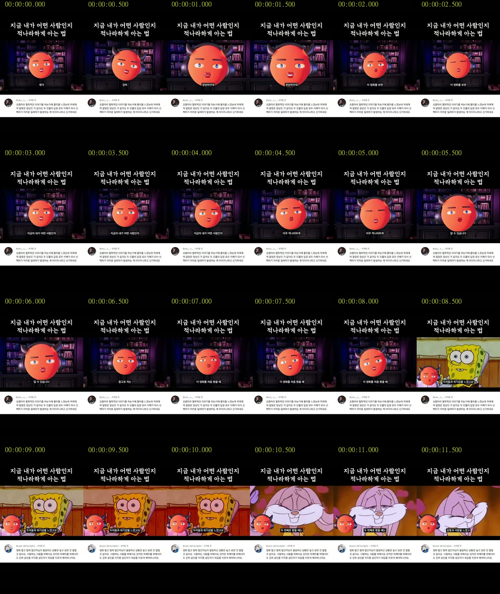
전체 흐름
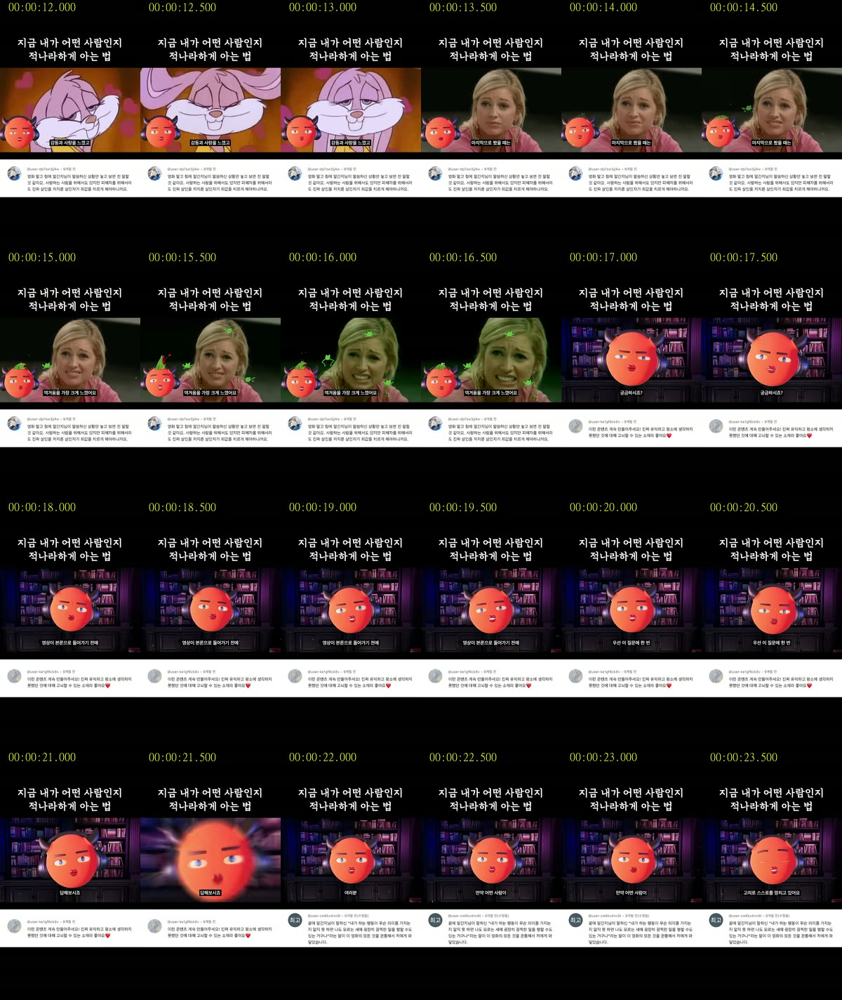
전체 흐름
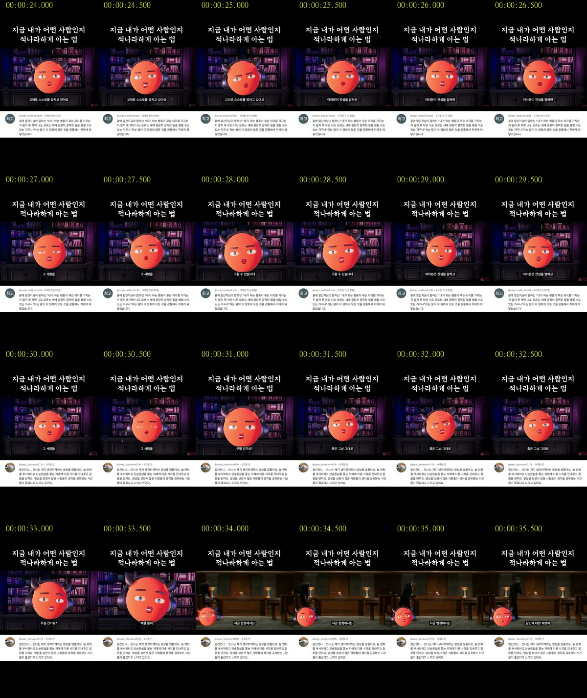
전체 흐름
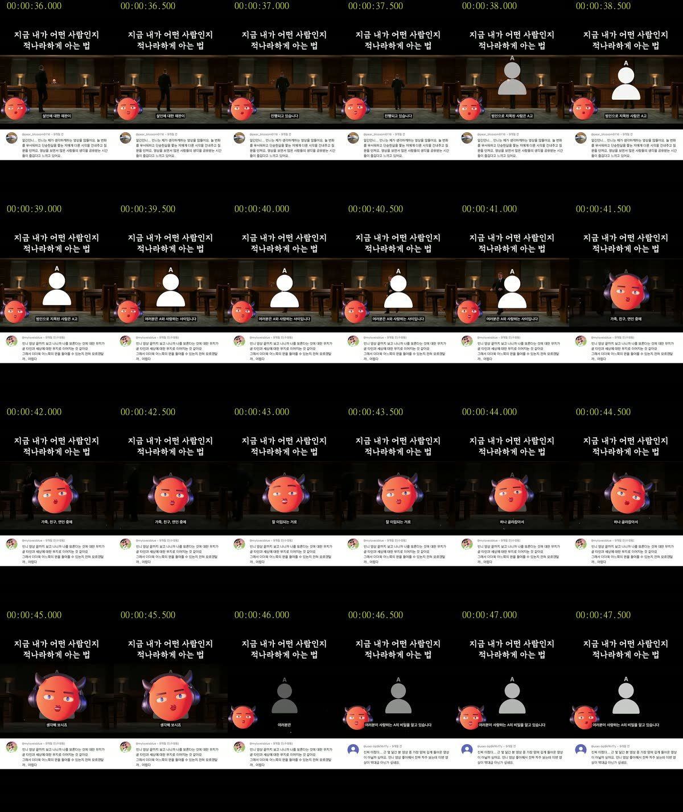
전체 흐름
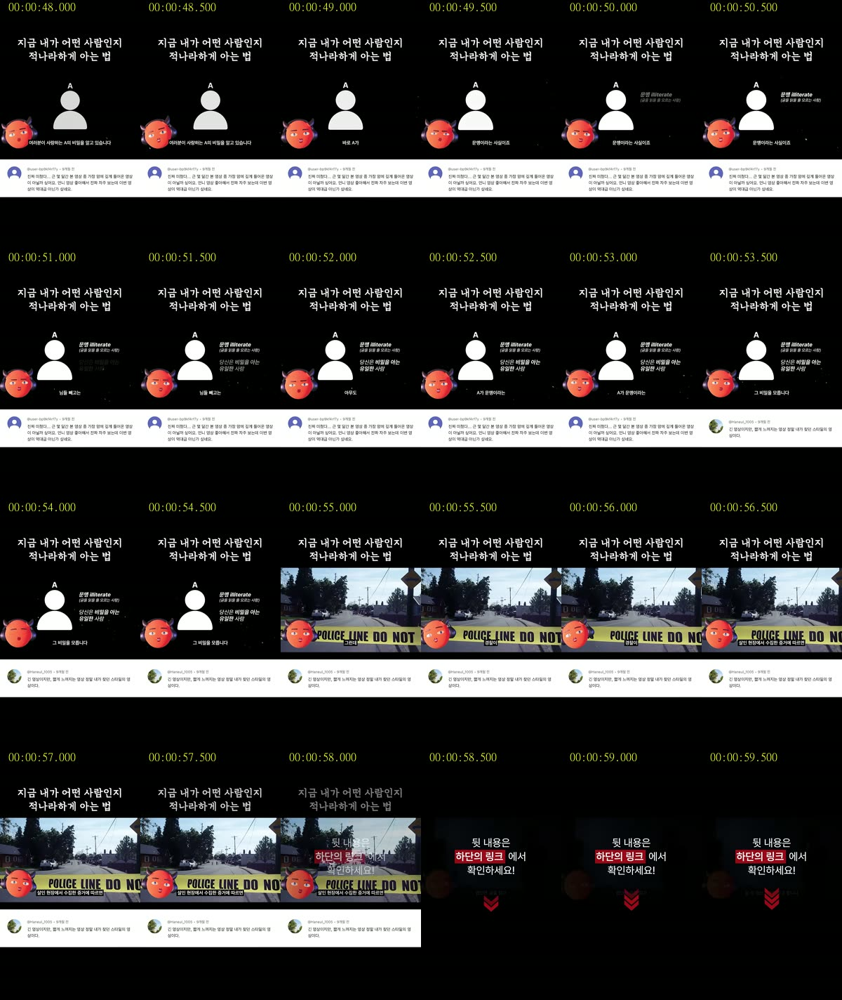